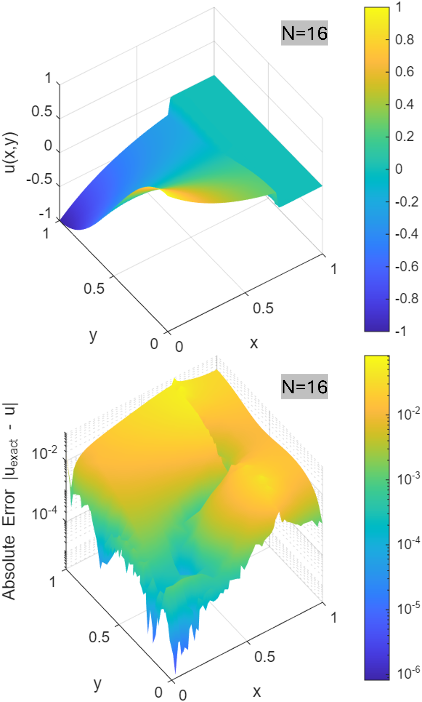

Paper_eng
Algebraic Purification of Operator Residue in Singular Perturbation Systems
Kibeom Kim1, Young Jun Yoon2*
1Independent Researcher, Republic of Korea (kohmeutto@gmail.com)
2School of Electronic and Mechanical Engineering, Gyeongkuk National University, Andong, Republic of Korea (yjyoon@gknu.ac.kr)
*Correspondence: Young Jun Yoon
Keywords: Algebraic purification, Jacobian non-normality, Discrete commutator error, Local asymmetry indicator, Finite volume method
Abstract
Finite-volume discretization of quasilinear elliptic equations with state-dependent diffusion induces non-normality in the Jacobian. Specifically, the derivative of the diffusion coefficient with respect to the state variable is multiplied by the gradient of the state. This product acts as an effective drift and generates an advection-like skew-symmetric component. Consequently, this asymmetry reduces the numerical stability of both direct and iterative linear solvers.
상태 의존적 확산을 동반하는 준선형 타원형 방정식의 유한체적 이산화는 야코비안에 비정규성을 유발한다. 구체적으로, 상태 변수에 대한 확산 계수의 미분은 상태 변수의 기울기와 곱해진다. 이 곱은 유효 표류로 작용하여 이류 형태의 반대칭 성분을 생성한다. 결과적으로 이러한 비대칭성은 직접 및 반복 선형 솔버의 수치적 안정성을 저하시킨다.
This study proposes a three-stage symmetrizing preconditioner. It diagnoses the source of asymmetry, locally adapts the mesh, and globally rebalances the discrete operator. The first stage identifies the advection-like origin of the asymmetry. This is achieved through a residual operator, defined as the difference between a linear operator and its formal adjoint. The second stage uses a commutator-based local indicator. This indicator drives r-adaptive mesh relocation via a weighted graph Laplacian.
본 연구는 3단계 대칭화 전제조건자를 제안한다. 이는 비대칭성의 원인을 진단하고, 국소적으로 격자를 적응시키며, 전역적으로 이산 연산자의 재균형을 맞춘다. 첫 번째 단계는 비대칭성의 이류 형태적 기원을 식별한다. 이는 선형 연산자와 그 공식 수반의 차이로 정의되는 잔차 연산자를 통해 이루어진다. 두 번째 단계는 교환자 기반의 국소 지표를 사용한다. 이 지표는 가중 그래프 라플라시안을 통해 r-적응형 격자 재배치를 유도한다.
The third stage introduces an edge-wise logarithmic ratio indicator. This indicator possesses a closed-form equivalence to the sum of a geometric volume ratio and a one-dimensional line integral of the drift-to-diffusion ratio. Additionally, a discrete Hodge decomposition splits this indicator into irrotational and solenoidal components. The irrotational component is absorbed by a diagonal scaling. The solenoidal component is subtracted from the Jacobian within an inexact Newton method.
세 번째 단계는 모서리 단위의 로그 비율 지표를 도입한다. 이 지표는 기하학적 체적 비율과 표류-확산 비율의 1차원 선적분의 합과 닫힌 형태의 동치성을 갖는다. 또한, 이산 호지 분해는 이 지표를 비회전 성분과 솔레노이드 성분으로 나눈다. 비회전 성분은 대각 스케일링에 의해 흡수된다. 솔레노이드 성분은 비정밀 뉴턴 기법 내에서 야코비안으로부터 감산된다.
A field-of-values argument bounds the spectrum of the preconditioned operator within a complex disk centered at unity. Numerical verification by the method of manufactured solutions on one- and two-dimensional problems with discontinuous diffusion confirms condition-number stabilization. This is achieved without introducing artificial dissipation. The current method applies to steady quasilinear elliptic problems. Extensions to advection-dominated or time-dependent regimes remain for future investigation.
값의 영역 논증은 전제조건화된 연산자의 스펙트럼을 1을 중심으로 하는 복소 원판 내로 유계한다. 불연속 확산을 갖는 1차원 및 2차원 문제에 대해 제조해 기법을 통한 수치적 검증은 조건수 안정화를 확인한다. 이는 인위적인 소산 없이 달성된다. 본 기법은 정상 준선형 타원형 문제에 적용된다. 이류 지배 및 시간 의존적 체제로의 확장은 향후 연구로 남겨둔다.
1. Introduction
Quasilinear elliptic equations with state-dependent diffusion arise in heat conduction, porous media flow, and semiconductor device modeling. In many such problems, the diffusion coefficient also exhibits discontinuities across material interfaces. The finite volume method (FVM) is a natural discretization for these problems because it preserves local conservation. However, the algebraic Jacobian produced by FVM inherits a structural asymmetry. This asymmetry originates not from the elliptic principal part, but from the linearization of the nonlinear coefficient.
상태 의존적 확산을 동반하는 준선형 타원형 방정식은 열전도, 다공성 매질 유동 및 반도체 소자 모델링에서 발생한다. 이러한 문제들 중 다수에서 확산 계수는 물질 경계면을 가로지르며 불연속성을 보인다. 유한체적법(FVM)은 국소적 보존성을 유지하므로 이러한 문제에 대한 자연스러운 이산화 방법이다. 그러나 FVM에 의해 생성된 대수적 야코비안은 구조적 비대칭성을 물려받는다. 이러한 비대칭성은 타원형 주부분이 아닌 비선형 계수의 선형화에서 기인한다.
Differentiating the flux with respect to the state variable produces a term in which the derivative of the diffusion coefficient is multiplied by the gradient of the state. This product acts on the discrete operator as an effective drift. Consequently, the Jacobian decomposes into three parts: a self-adjoint diffusive part, an advection-like skew-symmetric part associated with the effective drift, and a zeroth-order reaction part. The skew-symmetric part is the algebraic origin of non-normality.
상태 변수에 대해 플럭스를 미분하면 확산 계수의 미분에 상태 변수의 기울기가 곱해진 항이 생성된다. 이 곱은 이산 연산자에서 유효 표류로 작용한다. 결과적으로 야코비안은 세 부분으로 분해된다. 이는 자기 수반 확산부, 유효 표류와 연관된 이류 형태의 반대칭부, 그리고 0차 반응부이다. 이 중 반대칭부는 비정규성의 대수적 기원이다.
A non-normal operator possesses a non-orthogonal eigenvector basis. Consequently, even with stable eigenvalues, perturbations can exhibit transient growth before asymptotic decay. The behavior of linear solvers depends on the field of values in addition to the spectrum. In iterative methods such as GMRES, the convergence rate decreases as the field of values enlarges. In direct methods such as sparse LU factorization, roundoff error propagation increases and pivot stability decreases. Ultimately, these characteristics lead to condition-number growth under mesh refinement.
비정규 연산자는 비직교 고유벡터 기저를 가진다. 따라서 고유값이 안정적인 경우에도 섭동(perturbation)은 점근적으로 감쇠하기 전에 일시적으로 성장할 수 있다. 선형 솔버의 거동은 스펙트럼뿐만 아니라 값의 영역(field of values)에 의해서도 결정된다. GMRES와 같은 반복 해법에서는 값의 영역이 확장될수록 수렴 속도가 감소한다. 희소 LU 분해(sparse LU factorization)와 같은 직접 해법에서는 반올림 오차의 전파가 증가하고 피벗 안정성이 감소한다. 결과적으로 이러한 특성은 격자 세분화에 따른 조건수 증가를 유발한다.
A common remedy is to add empirical relaxation factors or numerical viscosity. This restores robustness but alters the discrete equation. The heuristic removal of physically inherent advection-like terms biases the solution trajectory. Therefore, this study investigates an alternative approach that diagnoses and rebalances the discrete operator by purely algebraic means. By doing so, the original equation is preserved, and only the conditioning of the linear system is improved. The present work treats the FVM Jacobian as a structured object whose asymmetry is identifiable, locally measurable, and globally rebalanceable, constructing a symmetrizing preconditioner from these observations.
일반적인 해결책은 경험적인 이완 계수나 수치적 점성을 추가하는 것이다. 이는 강건성을 회복시키지만 이산 방정식을 변형시킨다. 물리적으로 내재된 이류 형태의 항들을 경험적으로 제거하는 것은 해의 궤적을 편향시킨다. 따라서 본 연구는 순수하게 대수적인 방법을 통해 이산 연산자를 진단하고 재균형을 맞추는 대안적인 접근법을 조사한다. 이를 통해 원래의 방정식은 보존되며 선형 시스템의 조건화만이 개선된다. 본 연구는 FVM 야코비안을 비대칭성이 식별 가능하고, 국소적으로 측정 가능하며, 전역적으로 재균형을 맞출 수 있는 구조적 객체로 취급하며, 이러한 관찰을 바탕으로 대칭화 전제조건자를 구성한다.
To address this asymmetry, the analysis begins with the diagnosis of non-normality. Pseudospectra and field-of-values analyses developed by Trefethen et al. provide the language for transient growth and Krylov convergence of non-normal operators. The structural decomposition of an operator into self-adjoint and skew-symmetric parts is classical. Its use as the basis of preconditioning underlies the Hermitian and skew-Hermitian splitting (HSS) family introduced by Bai et al., together with its descendants.
이러한 비대칭성을 해결하기 위해 분석은 비정규성의 진단부터 시작된다. Trefethen 등이 개발한 유사스펙트럼 및 값의 영역 분석은 비정규 연산자의 일시적 성장과 크릴로프 수렴을 설명하는 기반을 제공한다. 연산자를 자기 수반부와 반대칭부로 분해하는 구조적 접근은 고전적인 방법이다. 이를 전제조건화의 기초로 사용하는 것은 Bai 등이 도입한 에르미트 및 반대칭 에르미트 분할(HSS) 제품군과 그 파생 방법들의 근간이 된다.
The local stage of the proposed procedure relies on r-adaptive mesh relocation. Equidistribution principles, harmonic mappings on Riemannian manifolds, and weighted graph Laplacian formulations have been developed by Winslow et al. Within this context, the choice of the weight is what distinguishes one method from another. Indicators based on residuals or commutator-like quantities are a standard ingredient.
제안된 절차의 국소적 단계는 r-적응형 격자 재배치에 의존한다. 균등 분포 원리, 리만 다양체 상의 조화 사상, 그리고 가중 그래프 라플라시안 공식화는 Winslow 등에 의해 개발되었다. 이러한 맥락에서, 가중치의 선택은 각 방법을 구별하는 요소이다. 잔차나 교환자 형태의 양에 기반한 지표들은 표준적인 구성 요소이다.
The global stage rests on two distinct lines of work. The first is the diagonal equilibration of nonsymmetric matrices, formalized by Curtis and Reid, refined by Ruiz, and extended in a symmetry-preserving form by Knight and Ruiz. The second is the exponential fitting of edge fluxes, originating with Scharfetter and Gummel in the device-modeling literature. In their setting, the natural edge weight for an advection-diffusion problem involves the exponential of a one-dimensional line integral of the drift-to-diffusion ratio. The closed-form equivalence derived in the present paper sits between these two lines and connects them through a discrete Helmholtz–Hodge decomposition (DHHD). DHHD on graphs and polyhedral meshes has been developed by Polthier et al. and surveyed by Bhatia et al.
전역적 단계는 두 가지 구분되는 연구 흐름에 기초한다. 첫 번째는 Curtis와 Reid가 정형화하고, Ruiz가 개선했으며, Knight와 Ruiz가 대칭 보존 형태로 확장한 비대칭 행렬의 대각 평형화이다. 두 번째는 소자 모델링 문헌에서 Scharfetter와 Gummel로부터 비롯된 모서리 플럭스의 지수 맞춤이다. 그들의 설정에서 이류-확산 문제에 대한 자연스러운 모서리 가중치는 표류-확산 비율의 1차원 선적분에 대한 지수 함수를 포함한다. 본 논문에서 도출된 닫힌 형태의 동치성은 이 두 흐름 사이에 위치하며 이산 헬름홀츠-호지 분해(DHHD)를 통해 이들을 연결한다. 그래프 및 다면체 격자에서의 DHHD는 Polthier 등에 의해 개발되었으며, Bhatia 등에 의해 조사되었다.
Finally, the use of an approximate Jacobian within Newton iteration, while preserving the exact nonlinear residual on the right-hand side, falls within the inexact Newton method of Dembo et al. Forcing-term strategies are due to Eisenstat and Walker. The numerical verification follows the method of manufactured solutions (MMS) in the form codified by Roache and Roy.
마지막으로, 우변의 정확한 비선형 잔차를 보존하면서 뉴턴 반복 내에서 근사 야코비안을 사용하는 것은 Dembo 등의 비정밀 뉴턴 기법에 해당한다. 강제항 전략은 Eisenstat과 Walker에 의해 제안되었다. 수치적 검증은 Roache와 Roy가 체계화한 형태의 제조해 기법(MMS)을 따른다.
The present work proposes a three-stage symmetrizing preconditioner for the FVM Jacobian of a quasilinear elliptic equation. The contributions are organized as follows.
본 연구는 준선형 타원형 방정식의 FVM 야코비안을 위한 3단계 대칭화 전제조건자를 제안한다. 연구의 기여도는 다음과 같이 구성된다.
The first stage is diagnosis, which identifies the advection-like origin of the asymmetry by carrying out a Fréchet expansion of the Jacobian about the current state, thereby separating the self-adjoint diffusive part, the skew-symmetric advection-like part, and the reaction part. This stage uses standard tools and is included for reproducibility.
첫 번째 단계는 진단으로, 현재 상태에 대한 야코비안의 프레셰 전개를 통해 자기 수반 확산부, 반대칭 이류 형태부, 반응부를 분리함으로써 비대칭성의 이류 형태적 기원을 식별한다. 이 단계는 표준적인 도구들을 사용하며 재현성을 위해 포함되었다.
The second stage is local correction, driving r-adaptive mesh relocation via a commutator-based local indicator. This indicator is obtained from the discrete projection of the convective residue at each node and subsequently used as the edge weight of a graph Laplacian system, whose solution determines the new node coordinates. The indicator is described in detail because it is needed for reproducibility, but the underlying mesh-adaptation scheme is standard.
두 번째 단계는 국소적 보정으로, 교환자 기반의 국소 지표를 통해 r-적응형 격자 재배치를 유도한다. 이 지표는 각 노드에서 대류 잔차의 이산 사영을 통해 얻어지며 이후 그래프 라플라시안 시스템의 모서리 가중치로 사용되어 새로운 노드 좌표를 결정한다. 지표는 재현성을 위해 상세히 설명되지만, 기저에 있는 격자 적응 기법은 표준적인 방법이다.
The third stage is global correction. An edge-wise logarithmic ratio indicator is defined from the magnitudes of cross-diagonal Jacobian entries and the local control-volume measures. The first analytical result is a closed-form equivalence: on each edge, the indicator reduces to the sum of a geometric volume ratio and a one-dimensional line integral of the drift-to-diffusion ratio. The second analytical result applies DHHD to the indicator field, splitting it into an irrotational component, which is absorbed exactly by a diagonal scaling matrix, and a solenoidal component. This solenoidal component is identified with a skew-symmetric residue of the scaled Jacobian, subtracted from the Jacobian on the left-hand side, and retained inside the nonlinear residual on the right-hand side. The result is an inexact Newton iteration whose preconditioned operator admits a field-of-values bound, with its spectrum contained in a complex disk centered at unity.
세 번째 단계는 전역적 보정이다. 교차 대각 야코비안 성분의 크기와 국소 검사 체적 측도로부터 모서리 단위의 로그 비율 지표가 정의된다. 첫 번째 분석 결과는 닫힌 형태의 동치성이다. 즉, 각 모서리에서 지표는 기하학적 체적 비율과 표류-확산 비율의 1차원 선적분의 합으로 단순화된다. 두 번째 분석 결과는 지표 장에 DHHD를 적용하여 이를 비회전 성분과 솔레노이드 성분으로 나누는 것이다. 비회전 성분은 대각 스케일링 행렬에 의해 정확하게 흡수된다. 솔레노이드 성분은 스케일된 야코비안의 반대칭 잔여물과 동일시되어 좌변의 야코비안에서 감산되고 우변의 비선형 잔차 내에 유지된다. 결과적으로 전제조건화된 연산자가 값의 영역 유계를 허용하며, 스펙트럼이 1을 중심으로 하는 복소 원판 내에 포함되는 비정밀 뉴턴 반복법이 도출된다.
Numerical verification by MMS on one- and two-dimensional problems with discontinuous diffusion confirms that the procedure stabilizes the condition number across material contrasts and wave frequencies. The spectral bound is consistent with directly measured eigenvalue distributions. The scope of the verification is limited to steady quasilinear elliptic problems with discontinuous diffusion; no claims are made for advection-dominated or time-dependent regimes.
불연속적인 확산을 갖는 1차원 및 2차원 문제에 대한 MMS 수치 검증은 이 절차가 물질 간 대비 및 파동 주파수 전반에 걸쳐 조건수를 안정화함을 확인한다. 스펙트럼 유계는 직접 측정된 고유값 분포와 일치한다. 검증의 범위는 불연속 확산을 갖는 정상 준선형 타원형 문제로 제한되며, 이류 지배 또는 시간 의존적 체제에 대해서는 어떠한 주장도 하지 않는다.
Section 2 introduces the quasilinear elliptic problem, the FVM Jacobian, and the symmetric and skew-symmetric splitting that organizes the subsequent analysis. Section 3 presents the local commutator-based indicator and the weighted graph Laplacian mesh adaptation. Section 4 develops the edge-wise logarithmic ratio indicator and proves its closed-form equivalence. Section 5 presents the DHHD of the indicator field, the construction of the symmetrizing preconditioner, and the field-of-values bound on the spectrum of the preconditioned operator. Section 6 reports numerical verification on one- and two-dimensional MMS problems. Section 7 summarizes the work and its limitations. The explicit form of the manufactured source terms, the details of the DHHD, the proof of the spectral bound, and the hyperparameter table are collected in the appendices.
2장은 준선형 타원형 문제, FVM 야코비안, 그리고 이후의 분석을 구성하는 대칭 및 반대칭 분할을 소개한다. 3장은 국소적 교환자 기반 지표와 가중 그래프 라플라시안 격자 적응을 제시한다. 4장은 모서리 단위의 로그 비율 지표를 전개하고 그 닫힌 형태의 동치성을 증명한다. 5장은 지표 장의 DHHD, 대칭화 전제조건자의 구성, 그리고 전제조건화된 연산자의 스펙트럼에 대한 값의 영역 유계를 제시한다. 6장은 1차원 및 2차원 MMS 문제에 대한 수치 검증 결과를 보고한다. 7장은 본 연구와 그 한계점을 요약한다. 제조된 소스 항의 명시적 형태, DHHD의 세부 사항, 스펙트럼 유계의 증명, 그리고 하이퍼파라미터 표는 부록에 수록되어 있다.
2. Quasilinear elliptic problem and finite-volume Jacobian
2.1 Governing equation and boundary conditions
Let $\Omega \subset \mathbb{R}^d$ with $d \in \{1, 2\}$ denote a bounded domain with Lipschitz boundary $\partial\Omega$. Consider the quasilinear elliptic equation:
$d \in {1, 2}$인 립시츠 경계 $\partial\Omega$를 갖는 유계 영역을 $\Omega \subset \mathbb{R}^d$라 하자. 다음과 같은 준선형 타원형 방정식을 고려한다.
$$ \nabla \cdot \bigl( p(u, \mathbf{x}) \nabla u \bigr) = q(\mathbf{x}) \quad \text{in } \Omega, $$where $u$ is the unknown state variable, $p(u, \mathbf{x})$ is a state-dependent diffusion coefficient that may be discontinuous in $\mathbf{x}$ across material interfaces, and $q(\mathbf{x})$ is a prescribed source term. The sign convention adopted here places the divergence of the flux on the left-hand side without a leading minus sign. Under this convention, the symmetric part of the diffusive operator is negative definite. The field-of-values analysis in Section 5 is therefore carried out for its negation, which is positive definite. This convention does not alter the subsequent analysis. The boundary $\partial\Omega$ is partitioned into a Dirichlet part $\Gamma_D$ and a Robin part $\Gamma_R$. Boundary conditions are imposed as follows:
여기서 $u$는 미지의 상태 변수, $p(u, \mathbf{x})$는 물질 경계면을 가로지르며 $\mathbf{x}$에 대해 불연속적일 수 있는 상태 의존적 확산 계수, $q(\mathbf{x})$는 규정된 소스 항이다. 본 연구에서 채택한 부호 규약은 선행하는 음의 부호 없이 플럭스의 발산을 좌변에 배치한다. 이 규약에 따라 확산 연산자의 대칭부는 음의 정부호가 된다. 따라서 5장의 값의 영역 분석은 양의 정부호인 그 역부호에 대해 수행된다. 이러한 규약은 후속 분석 결과에 영향을 미치지 않는다.경계 $\partial\Omega$는 디리클레 부분 $\Gamma_D$와 로빈 부분 $\Gamma_R$로 분할된다. 경계 조건은 다음과 같이 부과된다.
$$ u = u_D \text{ on } \Gamma_D, \qquad \alpha u + \beta\, p(u, \mathbf{x}) \nabla u \cdot \mathbf{n} = \gamma \text{ on } \Gamma_R, $$with prescribed scalars $\alpha$, $\beta$, $\gamma$ and outward unit normal $\mathbf{n}$. The Robin condition affects diagonal dominance and introduces skew-symmetric contributions during the assembly of the algebraic Jacobian. The diffusion coefficient is assumed to be bounded and strictly positive on each subdomain separated by material interfaces. Across an interface, the standard transmission condition applies. The state variable is continuous, and the normal component of the flux $p \nabla u \cdot \mathbf{n}$ is continuous. The state variable remains in $H^1(\Omega)$, while its gradient may exhibit a jump discontinuity at the interface.
여기서 $\alpha$, $\beta$, $\gamma$는 규정된 스칼라 값이며 $\mathbf{n}$은 외부를 향하는 단위 법선 벡터이다. 로빈 조건은 대각 지배성에 영향을 미치며, 대수적 야코비안을 조립하는 과정에서 반대칭 기여분을 도입한다.확산 계수는 물질 경계면에 의해 분리된 각 부분 영역에서 유계이며 0보다 엄격히 크다고 가정한다. 경계면을 가로질러서는 표준 전달 조건이 적용된다. 상태 변수는 연속적이며, 플럭스의 법선 성분인 $p \nabla u \cdot \mathbf{n}$ 또한 연속적이다. 상태 변수 자체는 $H^1(\Omega)$ 공간에 머무르지만, 그 기울기는 경계면에서 도약 불연속성을 보일 수 있다.
2.2 FVM semi-discretization
The domain $\Omega$ is partitioned into a finite collection of non-overlapping control volumes $\{\Omega_i\}_{i=1}^{N}$ such that $\overline{\Omega} = \bigcup_i \overline{\Omega_i}$. Each control volume $\Omega_i$ has a measure $V_i$ and is associated with a single nodal degree of freedom $u_i$ representing the cell-averaged state. Two control volumes $\Omega_i$ and $\Omega_j$ that share a face form an edge of the mesh graph. The face has area $A_{ij}$ and outward unit normal $\mathbf{n}_{ij}$ pointing from $\Omega_i$ to $\Omega_j$. In one dimension, $A_{ij}$ reduces to unity, and the mesh graph is a chain. Integrating the governing equation over $\Omega_i$ and applying the divergence theorem yields the discrete conservation law:
영역 $\Omega$는 $\overline{\Omega} = \bigcup_i \overline{\Omega_i}$를 만족하도록 겹치지 않는 유한 개의 검사 체적 ${\Omega_i}{i=1}^{N}$으로 분할된다. 각 검사 체적 $\Omega_i$는 측도 $V_i$를 가지며, 셀 평균 상태를 나타내는 단일 노드 자유도 $u_i$와 연결된다. 면을 공유하는 두 검사 체적 $\Omega_i$와 $\Omega_j$는 격자 그래프의 모서리를 형성한다. 이 면은 면적 $A{ij}$를 가지며, $\Omega_i$에서 $\Omega_j$로 향하는 외부 단위 법선 벡터 $\mathbf{n}{ij}$를 갖는다. 1차원에서는 $A{ij}$가 1로 단순화되고 격자 그래프는 사슬 형태가 된다. 지배 방정식을 $\Omega_i$에 대해 적분하고 발산 정리를 적용하면 이산 보존 법칙이 도출된다.
$$ \sum_{j \in \mathcal{N}(i)} \Gamma_{i \to j}(\mathbf{u}) - V_i\, \overline{q}_i = 0, $$where $\mathcal{N}(i)$ is the set of neighbors of node $i$, $\Gamma_{i \to j}$ is the discrete flux from $\Omega_i$ to $\Omega_j$ across the shared face, and $\overline{q}_i$ is the cell-averaged source. The discrete divergence operator $\hat{D}$ on the mesh graph is defined as the assembled sum of edge fluxes acting on a nodal field. Its action on a nodal field $\boldsymbol{\phi}$ at node $k$ has entries $[\hat{D}\boldsymbol{\phi}]_k = \sum_j \hat{D}_{kj}\phi_j$ and possesses the zero-sum property $\sum_j \hat{D}_{kj} = 0$. This property is the discrete counterpart of the divergence theorem applied to a constant field. The operator $\hat{D}$ is the discrete realization of the continuous operator $\nabla\cdot$ on $\Omega$. Collecting the nodal balances over all interior degrees of freedom produces the algebraic residual vector:
여기서 $\mathcal{N}(i)$는 노드 $i$의 이웃 노드 집합, $\Gamma_{i \to j}$는 공유된 면을 가로질러 $\Omega_i$에서 $\Omega_j$로 향하는 이산 플럭스, $\overline{q}_i$는 셀 평균 소스이다. 격자 그래프 상의 이산 발산 연산자 $\hat{D}$는 노드 장에 작용하는 모서리 플럭스들의 조립된 합으로 정의된다. 노드 장 $\boldsymbol{\phi}$에 대한 노드 $k$에서의 작용은 $[\hat{D}\boldsymbol{\phi}]_k = \sum_j \hat{D}_{kj}\phi_j$ 성분들을 가지며, $\sum_j \hat{D}_{kj} = 0$이라는 합산 영(zero-sum) 특성을 지닌다. 이 특성은 상수 장에 적용된 발산 정리의 이산적 대응물이다. 연산자 $\hat{D}$는 $\Omega$ 상의 연속 연산자 $\nabla\cdot$의 이산적 구현체이다.모든 내부 자유도에 걸쳐 노드 균형을 취합하면 대수적 잔차 벡터가 생성된다.
$$ \mathbf{F}(\mathbf{u}) = \hat{D}\bigl( p(\mathbf{u})\, \hat{D}\mathbf{u} \bigr) - \mathbf{q} \in \mathbb{R}^N, $$where the diffusive flux is constructed by an edge-based two-point approximation that satisfies the transmission condition at material interfaces. The local conservation identity $\Gamma_{j \to i} = -\Gamma_{i \to j}$ holds exactly at the discrete level by the construction of the flux.
여기서 확산 플럭스는 물질 경계면에서의 전달 조건을 만족하는 모서리 기반의 2점 근사를 통해 구성된다. 국소 보존 항등식 $\Gamma_{j \to i} = -\Gamma_{i \to j}$는 플럭스의 구성 방식에 의해 이산 수준에서 정확히 성립한다.
2.3 The Jacobian and its symmetric and skew-symmetric parts
The Jacobian $\hat{J} = \partial \mathbf{F}/\partial \mathbf{u}$ is the linearization of the residual vector about the current state. Performing the Fréchet expansion of $\mathbf{F}(\mathbf{u})$ and retaining first-order terms in a perturbation $\delta\mathbf{u}$ yields:
야코비안 $\hat{J} = \partial \mathbf{F}/\partial \mathbf{u}$는 현재 상태에 대한 잔차 벡터의 선형화이다. $\mathbf{F}(\mathbf{u})$의 프레셰 전개를 수행하고 섭동 $\delta\mathbf{u}$에 대한 1차 항을 유지하면 다음을 얻는다.
$$ \hat{J}\, \delta \mathbf{u} = \Bigl[\, \underbrace{\hat{D}\bigl( p(\mathbf{u})\, \hat{D}\,\cdot \bigr)}_{\hat{L}_2} \;+\; \underbrace{\hat{D}\Bigl( \tfrac{\partial p}{\partial u}\, \hat{D}\mathbf{u} \cdot \Bigr)}_{\hat{L}_1} \;-\; \underbrace{\tfrac{\partial \mathbf{q}}{\partial \mathbf{u}}}_{-\hat{L}_0} \,\Bigr]\, \delta \mathbf{u}, $$so that $\hat{J} = \hat{L}_2 + \hat{L}_1 + \hat{L}_0$ in discrete form. The matrices $\hat{L}_2$, $\hat{L}_1$, and $\hat{L}_0$ are the discrete realizations of the continuous abstract operators $L_2 = \nabla\cdot(p\nabla\,\cdot)$, $L_1 = \nabla\cdot(\mathbf{v}\,\cdot)$, and $L_0 = -\partial q/\partial u$ assembled on the FVM mesh. The continuous operator $L_2$ originates from the principal diffusive part. The continuous operator $L_1$ originates from the linearization of the nonlinear coefficient and acts as an advection-like first-order operator. The continuous operator $L_0$ originates from the linearization of the source term. The effective drift velocity associated with $L_1$ is
따라서 이산 형태에서 $\hat{J} = \hat{L}_2 + \hat{L}_1 + \hat{L}_0$가 된다. 행렬 $\hat{L}_2$, $\hat{L}_1$, $\hat{L}_0$는 FVM 격자 상에 조립된 연속 추상 연산자 $L_2 = \nabla\cdot(p\nabla\,\cdot)$, $L_1 = \nabla\cdot(\mathbf{v}\,\cdot)$, $L_0 = -\partial q/\partial u$의 이산적 구현체이다. 연속 연산자 $L_2$는 주요 확산부에서 유래한다. 연속 연산자 $L_1$은 비선형 계수의 선형화에서 기인하며 이류 형태의 1차 연산자로 작용한다. 연속 연산자 $L_0$는 소스 항의 선형화에서 비롯된다. $L_1$과 연관된 유효 표류 속도는 다음과 같다.
$$ \mathbf{v} \equiv \frac{\partial p}{\partial u} \nabla u, $$meaning $L_1$ takes the form of a continuous divergence applied to $\mathbf{v}$ multiplied by a state perturbation. A detailed derivation of the discrete form of $\hat{L}_1$ at the node level is provided in Section 3.For the algebraic study of conditioning, $\hat{J}$ is split additively into its symmetric and skew-symmetric parts:
따라서 $L_1$은 상태 섭동이 곱해진 $\mathbf{v}$에 연속 발산이 적용된 형태를 취한다. 노드 수준에서 $\hat{L}_1$의 이산 형태에 대한 상세한 유도는 3장에서 제공된다.조건화의 대수적 연구를 위해 $\hat{J}$는 가법적으로 대칭부와 반대칭부로 분리된다.
$$ \hat{J} = \hat{H} + \hat{A}, \qquad \hat{H} = \tfrac{1}{2}(\hat{J} + \hat{J}^T), \qquad \hat{A} = \tfrac{1}{2}(\hat{J} - \hat{J}^T). $$In the absence of the advection-like contribution, $\hat{A}$ vanishes identically, and $\hat{J}$ is symmetric and definite up to boundary terms. Under the present sign convention, $\hat{H}$ is negative definite. In the presence of $\hat{L}_1$, the matrix $\hat{A}$ is non-zero, and its magnitude determines the non-normality of $\hat{J}$.To analyze the origin of $\hat{A}$ at the operator level, an antisymmetric part operator is introduced. For any linear operator $L$ acting on a complex Hilbert space $\mathcal{H}$ with inner product $\langle \phi, \psi \rangle = \int_\Omega \phi^*\psi\, d\Omega$, it is defined as:
이류 형태의 기여분이 없을 때 $\hat{A}$는 완전히 소멸하며, $\hat{J}$는 경계 항을 제외하고 대칭적이고 정부호이다. 현재의 부호 규약 하에서 $\hat{H}$는 음의 정부호이다. $\hat{L}_1$이 존재할 경우 행렬 $\hat{A}$는 0이 아니며, 그 크기가 $\hat{J}$의 비정규성을 결정한다.연산자 수준에서 $\hat{A}$의 기원을 분석하기 위해 반대칭부 연산자가 도입된다. 내적 $\langle \phi, \psi \rangle = \int_\Omega \phi^*\psi\, d\Omega$를 갖는 복소 힐베르트 공간 $\mathcal{H}$에 작용하는 임의의 선형 연산자 $L$에 대해, 다음과 같이 정의된다.
$$ \mathcal{R}(L) \equiv L - L^\dagger, $$where $L^\dagger$ denotes the formal adjoint of $L$ with respect to this inner product. By the linearity of the adjoint operation, $\mathcal{R}$ is additive. A direct calculation on compactly supported test functions shows that $\mathcal{R}(L_2) = 0$ and $\mathcal{R}(L_0) = 0$. The non-trivial contribution originates entirely from $\mathcal{R}(L_1)$. Consequently, the skew-symmetric matrix $\hat{A}$ is the discrete realization of the continuous operator $\tfrac{1}{2}\mathcal{R}(L_1)$ assembled on the FVM mesh.A consequence of the Robin boundary condition is that $\mathcal{R}(L_2)$ does not vanish on $\Gamma_R$. Boundary terms emerge during integration by parts and contribute to the Jacobian rows associated with boundary nodes. The present analysis isolates the interior contribution by restricting the skew-symmetric residue to the internal part of the discrete domain. This restriction is formalized algebraically in Section 5 via a diagonal projection. The boundary-induced asymmetry remains unmodified, as altering it would compromise the well-posedness of the linear system.
여기서 $L^\dagger$는 이 내적에 대한 $L$의 공식 수반을 나타낸다. 수반 연산의 선형성에 의해 $\mathcal{R}$은 가법적이다. 콤팩트 지지 시험 함수에 대한 직접적인 계산은 $\mathcal{R}(L_2) = 0$ 및 $\mathcal{R}(L_0) = 0$임을 보여준다. 비자명한 기여분은 전적으로 $\mathcal{R}(L_1)$에서 기인한다. 따라서 반대칭 행렬 $\hat{A}$는 FVM 격자 상에 조립된 연속 연산자 $\tfrac{1}{2}\mathcal{R}(L_1)$의 이산적 구현체이다. 로빈 경계 조건의 결과로 $\mathcal{R}(L_2)$는 $\Gamma_R$에서 소멸하지 않는다. 부분 적분 중에 경계 항이 나타나며 경계 노드와 연관된 야코비안 행에 기여한다. 본 분석은 반대칭 잔여물을 이산 영역의 내부로 제한함으로써 내부 기여분을 격리한다. 이러한 제한은 5장에서 대각 사영을 통해 대수적으로 공식화된다. 경계로 인해 유발된 비대칭성을 수정하는 것은 선형 시스템의 정적격성을 훼손하므로 변경하지 않고 유지한다.
2.4 Origin of the advection-like asymmetry
The skew-symmetric component arising from $L_1$ is explicitly derived through a weak-form calculation at the continuous level. Let $\phi$ and $\psi$ be smooth, compactly supported test functions on $\Omega$. Substituting $L_1 = \nabla\cdot(\mathbf{v}\,\cdot)$ and its formal adjoint $L_1^\dagger = -\mathbf{v}\cdot\nabla$ into the definition of $\mathcal{R}$, and applying the Leibniz rule to the divergence yields:
$L_1$에서 발생하는 반대칭 성분은 연속 수준에서의 약형 계산을 통해 명시적으로 도출된다. $\phi$와 $\psi$를 $\Omega$ 상의 매끄러운 콤팩트 지지 시험 함수라 하자. $L_1 = \nabla\cdot(\mathbf{v},\cdot)$와 그 공식 수반 $L_1^\dagger = -\mathbf{v}\cdot\nabla$를 $\mathcal{R}$의 정의에 대입하고 발산에 라이프니츠 법칙을 적용하면 다음을 얻는다.
$$ \langle \phi, \mathcal{R}(L_1) \psi \rangle_\Omega = \langle \phi, (\nabla \cdot \mathbf{v})\, \psi + 2\, \mathbf{v} \cdot \nabla \psi \rangle_\Omega. $$The first term on the right-hand side is the divergence of the effective drift acting on the state perturbation. The second term is twice the homogeneous advection of the state perturbation along $\mathbf{v}$. Together, they characterize the continuous advection residue inside the Jacobian. They represent the analytical target that the discrete construction in Section 3 must reproduce locally, and that the global correction in Sections 4 and 5 must algebraically rebalance.This calculation establishes the structural origin of the asymmetry, but it does not prescribe a treatment method. This study posits that the asymmetry, while physically inherent to the linearized operator, can be algebraically rebalanced without altering the nonlinear residual. The subsequent sections develop this rebalancing procedure. Section 3 modifies the local mesh geometry, while Sections 4 and 5 adjust the global algebraic structure of the Jacobian.
우변의 첫 번째 항은 상태 섭동에 작용하는 유효 표류의 발산이다. 두 번째 항은 $\mathbf{v}$를 따른 상태 섭동의 동차 이류의 두 배이다. 이들은 야코비안 내부의 연속 이류 잔여물을 함께 특징짓는다. 이들은 3장의 이산적 구성이 국소적으로 재현해야 하며, 4장과 5장의 전역적 보정이 대수적으로 재균형을 맞춰야 하는 분석적 대상을 형성한다.
This calculation establishes the structural origin of the asymmetry, but it does not prescribe a treatment method. This study posits that the asymmetry, while physically inherent to the linearized operator, can be algebraically rebalanced without altering the nonlinear residual. The subsequent sections develop this rebalancing procedure. Section 3 modifies the local mesh geometry, while Sections 4 and 5 adjust the global algebraic structure of the Jacobian.
이 계산은 비대칭성의 구조적 기원을 확립하지만, 처리 방법을 규정하지는 않는다. 본 연구는 이러한 비대칭성이 선형화된 연산자에 물리적으로 내재되어 있음에도 불구하고 비선형 잔차를 변경하지 않고 대수적으로 재균형을 맞출 수 있다고 상정한다. 후속 장들은 이러한 재균형 절차를 전개한다. 3장은 국소적인 격자 기하 구조를 수정하며, 4장과 5장은 야코비안의 전역적인 대수 구조를 조정한다.
3. Local indicator and mesh adaptation
The first algorithmic stage of the proposed procedure addresses the local geometry of the mesh. The objective is to concentrate control volumes in regions where the advection-like term assembled from $L_1$ produces large discrete commutator errors, without introducing tangling or topological inversion. The procedure follows standard r-adaptive mesh methods based on the weighted graph Laplacian. The specific contribution of this section is the definition of the edge weight, which is derived from a discrete projection of the convective residue identified in Section 2.4. The remainder of the construction utilizes established techniques and is presented compactly.
제안된 절차의 첫 번째 알고리즘 단계는 격자의 국소 기하 구조를 다룬다. 목적은 $L_1$에서 조립된 이류 형태의 항이 큰 이산 교환자 오차를 발생시키는 영역에 검사 체적을 집중시키는 것이며, 이 과정에서 얽힘(tangling)이나 위상학적 역전(topological inversion)을 유발하지 않아야 한다. 이 절차는 가중 그래프 라플라시안에 기반한 표준 r-적응형 격자 기법(methods)을 따른다. 본 절의 구체적인 기여는 2.4절에서 식별된 대류 잔차의 이산 사영으로부터 도출되는 모서리 가중치의 정의에 있다. 구성의 나머지 부분은 확립된 기술을 활용하며 간결하게 제시된다.
3.1. Discrete projection of the convective residue
The continuous target identified in Section 2.4 consists of the divergence of the effective drift acting on the state perturbation, combined with twice the homogeneous advection of the perturbation along the drift. The local indicator is constructed from the discrete realization of these two contributions at each node.
2.4절에서 식별된 연속 대상은 상태 섭동에 작용하는 유효 표류의 발산과 표류를 따른 섭동의 동차 이류의 두 배로 구성된다. 국소 지표는 각 노드에서 이 두 기여분의 이산적 구현체를 통해 구성된다.
Let $\hat{D}$ denote the discrete divergence operator assembled on the mesh graph, with entries $\hat{D}_{kj}$ associated with the edge from node $k$ to its neighbor $j$. The operator $\hat{D}$ satisfies the zero-sum property $\sum_{j} \hat{D}_{kj} = 0$, representing the discrete counterpart of the divergence theorem applied to a constant field. For any nodal field $\psi$ and any nodal velocity field $v$, the total discrete divergence at node $k$ of the product $v\psi$ is
$\hat{D}$를 노드 $k$에서 이웃 노드 $j$로 향하는 모서리와 연관된 성분 $\hat{D}_{kj}$를 갖는, 격자 그래프 상에 조립된 이산 발산 연산자라 하자. 연산자 $\hat{D}$는 상수 장에 적용된 발산 정리의 이산적 대응물인 $\sum_{j} \hat{D}_{kj} = 0$이라는 합산 영(zero-sum) 특성을 만족한다. 임의의 노드 장 $\psi$와 임의의 노드 속도 장 $v$에 대해, 노드 $k$에서 곱 $v\psi$의 총 이산 발산은 다음과 같다.
$$ [\hat{D}(v\psi)]_k = \sum_{j} \hat{D}_{kj}\, v_j\, \psi_j. $$Subtracting the identically zero term $v_k\psi_k \sum_j \hat{D}_{kj}$ recasts the right-hand side in relative form:
항등적으로 0인 항 $v_k\psi_k \sum_j \hat{D}_{kj}$를 감산하면 우변이 상대적인 형태로 변환된다.
$$ [\hat{D}(v\psi)]_k = \sum_{j} \hat{D}_{kj}\, ( v_j\psi_j - v_k\psi_k ). $$The factor inside the parenthesis is split as $v_j\psi_j - v_k\psi_k = (v_j - v_k)\,\psi_j + v_k\,(\psi_j - \psi_k)$. Consequently, the discrete divergence at node $k$ separates into two contributions:
괄호 안의 인수는 $v_j\psi_j - v_k\psi_k = (v_j - v_k)\,\psi_j + v_k\,(\psi_j - \psi_k)$로 분리된다. 결과적으로 노드 $k$에서의 이산 발산은 두 기여분으로 나뉜다.
$$ [\hat{D}(v\psi)]_k = \underbrace{\sum_{j} (v_j - v_k)\, \hat{D}_{kj}\, \psi_j}_{\text{discrete projection of }(\nabla\cdot v)\psi} \;+\; \underbrace{\sum_{j} v_k\, \hat{D}_{kj}\, (\psi_j - \psi_k)}_{\text{discrete projection of }v\cdot\nabla\psi}. $$By the zero-sum property, the second sum reduces to $\sum_j v_k \hat{D}_{kj}\psi_j$, which represents the standard discrete realization of the homogeneous advection $v \cdot \nabla \psi$ at node $k$. Similarly, the first sum simplifies to $\sum_j (v_j - v_k)\hat{D}_{kj}\psi_j$, representing the discrete realization of the divergence of the drift acting on $\psi$. Adding the second sum twice, consistent with the weak-form identity of Section 2.4, yields the total discrete convective residue at node $k$:
합산 영 특성에 의해 두 번째 합은 $\sum_j v_k \hat{D}_{kj}\psi_j$로 단순화되며, 이는 노드 $k$에서 동차 이류 $v \cdot \nabla \psi$의 표준적인 이산 구현체를 나타낸다. 유사하게, 첫 번째 합은 $\sum_j (v_j - v_k)\hat{D}_{kj}\psi_j$로 단순화되며, 이는 $\psi$에 작용하는 표류 발산의 이산 구현체를 나타낸다.2.4절의 약형 항등식에 따라 두 번째 합을 두 번 더하면 노드 $k$에서의 총 이산 대류 잔차가 도출된다.
$$ [(\nabla\cdot v)\psi + 2 v\cdot\nabla\psi]_k = \sum_{j} \bigl[\, (v_j - v_k)\, \hat{D}_{kj}\, \psi_j + 2\, v_k\, \hat{D}_{kj}\, \psi_j \,\bigr] \equiv \sum_{j} T_{kj}. $$The summand simplifies to
피가수(summand)는 다음과 같이 단순화된다.
$$ T_{kj} = ( v_j + v_k )\, \hat{D}_{kj}\, \psi_j, $$which represents the local directional tension transferred along the edge from node $k$ to node $j$. The quantity $T_{kj}$ inherits a sign from the orientation of the edge. To derive a non-negative scalar invariant under reversal, the local indicator on the edge $(k, j)$ is defined as
이는 노드 $k$에서 노드 $j$로 모서리를 따라 전달되는 국소 방향성 장력(directional tension)을 나타낸다. 양 $T_{kj}$는 모서리의 방향으로부터 부호를 물려받는다. 방향이 반전되어도 상쇄되지 않는 음이 아닌 스칼라를 얻기 위해 모서리 $(k, j)$에서의 국소 지표를 다음과 같이 정의한다.
$$ S_{kj} = \tfrac{1}{2}\bigl( |T_{kj}| + |T_{jk}| \bigr). $$The indicator $S_{kj}$ measures the local imbalance of the convective residue across the edge. It attains large values where the effective drift varies significantly between adjacent nodes or where the state perturbation exhibits a sharp gradient. It is identically zero when the advection-like contribution is absent ($\partial p/\partial u \equiv 0$).
지표 $S_{kj}$는 모서리를 가로지르는 대류 잔차의 국소적 불균형을 측정한다. 이 값은 인접한 노드 간에 유효 표류가 크게 변하거나 상태 섭동이 급격한 기울기를 가질 때 커진다. 이류 형태의 기여분이 없을 때, 즉 $\partial p/\partial u \equiv 0$일 때 이 값은 항등적으로 0이 된다.
3.2. Weighted graph Laplacian and r-adaptive relocation
The local indicator $S_{kj}$ is incorporated into a weighted graph Laplacian system to determine the new node coordinates. This standard construction is included for reproducibility.A dimensionless indicator is obtained by normalizing $S_{kj}$ with its global maximum:
국소 지표 $S_{kj}$는 새로운 노드 좌표를 결정하는 가중 그래프 라플라시안 시스템에 통합된다. 이 표준적인 구성은 재현성을 위해 포함되었다. $S_{kj}$를 전역 최댓값으로 정규화하여 무차원 지표를 얻는다.
$$ \bar{S}_{kj} = \frac{S_{kj}}{\max_{(m,n)} S_{mn}}. $$The edge weight is then defined as
그런 다음 모서리 가중치를 다음과 같이 정의한다.
$$ W_{kj} = 1.0 + \bar{S}_{kj}. $$The unit baseline ensures the positive definiteness of the Laplacian system and bounds the local stiffness from below. This bounded stiffness limits the magnitude of local deformation, preventing the topological inversion of cells during relocation.Treating the mesh as a network of springs with stiffness $W_{kj}$, the equilibrium position $X_i$ of an interior node $i$ is determined by a zero net spring force:
단위 기준값(unit baseline)은 라플라시안 시스템의 양의 정부호성을 보장하고 국소 강성(stiffness)의 하한을 제한한다. 이러한 제한된 강성은 국소 변형의 크기를 제한하여 재배치 시 셀의 위상학적 역전을 방지한다.격자를 강성 $W_{kj}$를 가진 스프링 네트워크로 취급하면, 내부 노드 $i$의 평형 위치 $X_i$는 순 스프링 힘이 0이 되는 지점으로 결정된다.
$$ \sum_{j \in \mathcal{N}(i)} W_{ij} ( X_i - X_j ) = \Bigl( \sum_{j \in \mathcal{N}(i)} W_{ij} \Bigr) X_i - \sum_{j \in \mathcal{N}(i)} W_{ij} X_j = 0. $$The diagonal sum $\sum_{j} W_{ij}$ defines the entry $K_{ii}$ of the degree matrix $\hat{K}$. Letting $\hat{W}$ denote the global adjacency matrix assembled from the edge weights, the local equilibrium conditions assemble into the global pure graph Laplacian:
대각합 $\sum_{j} W_{ij}$는 차수 행렬(degree matrix) $\hat{K}$의 $K_{ii}$ 성분을 정의한다. $\hat{W}$를 모서리 가중치로부터 조립된 전역 인접 행렬(adjacency matrix)이라 할 때, 국소 평형 조건들은 전역 순수 그래프 라플라시안으로 조립된다.
$$ \hat{L}_{\mathrm{sys}} = \hat{K} - \hat{W}. $$The matrix $\hat{L}_{\mathrm{sys}}$ is singular, possessing a one-dimensional null space corresponding to rigid translation. To enforce a unique solution, Dirichlet boundary conditions are applied by clamping the boundary nodes to a reference coordinate vector $\mathbf{B}_{\mathrm{ref}}$. The clamped operator $\tilde{L}_{\mathrm{sys}}$ is invertible, and the new interior coordinates are obtained from
행렬 $\hat{L}{\mathrm{sys}}$는 특이 행렬(singular)이며 강체 이동에 해당하는 1차원 영공간(null space)을 가진다. 유일해를 구하기 위해 경계 노드들을 기준 좌표 벡터 $\mathbf{B}{\mathrm{ref}}$에 고정함으로써 디리클레 경계 조건을 부과한다. 고정된 연산자 $\tilde{L}{\mathrm{sys}}$는 가역적이며, 새로운 내부 좌표는 다음 식으로부터 얻어진다.
$$ \tilde{L}_{\mathrm{sys}} \mathbf{X}_{\mathrm{new}} = \mathbf{B}_{\mathrm{ref}}. $$Because $\bar{S}_{kj}$ is bounded above by unity, each edge weight resides in the interval $[1.0, 2.0]$. This bound, combined with the diagonal dominance induced by the degree matrix, ensures that relocation does not invert cells in either one or two dimensions.Following relocation, each control volume measure $\tilde{V}_k$ is recomputed in the new coordinate system, producing the dual volume metric matrix:
구조적으로 $\bar{S}{kj}$의 상한이 1이므로 각 모서리 가중치는 $[1.0, 2.0]$ 구간 내에 존재한다. 이 상한은 차수 행렬에 의해 유도된 대각 지배성과 결합되어 1차원 또는 2차원에서 재배치가 셀을 역전시키지 않음을 보장한다.재배치 후, 각 검사 체적 측도 $\tilde{V}_k$는 새로운 좌표계에서 다시 계산되어 이중 체적 계량 행렬(dual volume metric matrix)을 산출한다.
$$ \hat{G} = \mathrm{diag}( \tilde{V}_0,\, \tilde{V}_1,\, \ldots,\, \tilde{V}_{N-1} ). $$The matrix $\hat{G}$ encodes the geometric scaling of the relocated mesh and serves as the input for the global construction in Sections 4 and 5.
행렬 $\hat{G}$는 재배치된 격자의 기하학적 스케일링을 부호화하며, 4장과 5장의 전역 구성에 대한 입력으로 사용된다.
3.3. Boundary handling and hyperparameters
Two practical aspects of the local stage are detailed for reproducibility.
국소 단계의 두 가지 실무적 측면을 재현성을 위해 명시한다.
First, regarding nodes adjacent to material interfaces: a node located within a fixed fraction of the local edge length from the interface is snapped to the interface position prior to solving the relocation system. This auto-snapping aligns element edges with the discontinuity and restricts the numerical singularity of the diffusion coefficient to a single evaluation point. Otherwise, accidental cancellations of interpolation errors across the interface may artificially reduce the truncation error and alter the observed convergence rate. All numerical experiments in Section 6 uniformly apply a threshold of fifty percent of the local edge length.
첫째, 물질 경계면에 인접한 노드의 처리와 관련된다. 인터페이스로부터 국소 모서리 길이의 일정 비율 이내에 위치한 노드는 재배치 시스템을 풀기 전에 인터페이스 위치로 고정(snapping)된다. 이러한 자동 고정은 요소 모서리를 불연속면과 정렬시키고 확산 계수의 수치적 특이성을 단일 평가 지점으로 국한한다. 그렇지 않을 경우, 경계면을 가로지르는 보간 오차의 우발적인 상쇄가 절단 오차(truncation error)를 인위적으로 감소시켜 관찰되는 수렴 속도를 변화시킬 수 있다. 6장의 모든 수치 실험에서는 국소 모서리 길이의 50%라는 임계값을 격자 전체에 균일하게 적용한다.
Second, the method controls residual growth induced by geometric deformation during relocation. The norm of the nonlinear residual is monitored at each iteration of the relocation loop. The geometric coordinates and state variables producing the minimum residual norm are stored. If a relocation step increases the residual norm, the system reverts to the stored configuration, freezing the topological deformation of the mesh at that state. This rollback procedure prevents the amplification of truncation errors during the asymptotic phase of the nonlinear iteration.
둘째, 재배치 과정 중 발생하는 기하학적 변형에 의한 잔차 증가를 통제한다. 비선형 잔차의 노름(norm)은 재배치 루프의 각 반복 단계에서 모니터링된다. 최소 잔차 노름을 달성하는 기하학적 좌표와 상태 변수가 저장된다. 재배치 단계 이후 잔차 노름이 증가하면, 시스템은 저장된 구성으로 복원되며 격자의 위상학적 변형은 해당 상태에서 동결된다. 이러한 롤백(rollback) 절차는 비선형 반복의 점근적 단계 동안 재배치가 절단 오차를 증폭시키는 것을 방지한다.
The local stage utilizes three hyperparameters: the auto-snapping threshold (fifty percent of the local edge length), the baseline stiffness (unity), and the recursive subdivision depth for the initial two-dimensional unstructured triangulation (three). These values remain fixed across all experiments in Section 6. A sensitivity analysis of these parameters is beyond the scope of this study.
국소 단계에서는 세 가지 하이퍼파라미터가 사용된다. 자동 고정 임계값(국소 모서리 길이의 50%), 기준 강성(1), 그리고 초기 2차원 비정형 삼각 분할 구축에 사용되는 재귀적 분할 깊이(3)이다. 이 값들은 6장의 모든 실험에서 고정되어 유지된다. 이 매개변수들에 대한 민감도 분석은 본 연구의 범위를 벗어난다.
The construction described in this section yields a relocated mesh and the corresponding dual volume metric matrix $\hat{G}$. It does not alter the assembly of the Jacobian or the residual vector, aside from the updated node coordinates. The algebraic asymmetry of $\hat{J}$ identified in Section 2.4 persists and is addressed by the global correction detailed in the subsequent sections.
본 절에서 설명된 구성은 재배치된 격자와 이에 대응하는 이중 체적 계량 행렬 $\hat{G}$를 생성한다. 갱신된 노드 좌표 변경 외에 야코비안이나 잔차 벡터의 조립 방식은 변경하지 않는다. 2.4절에서 식별된 $\hat{J}$의 대수적 비대칭성은 여전히 존재하며, 이는 후속 장들에서 전개될 전역적 보정의 대상이 된다.
4. Global edge indicator and its closed-form
This section introduces a global edge-wise indicator that quantifies the cross-diagonal magnitude imbalance of the FVM Jacobian, alongside a closed-form equivalence that reduces the indicator to two physically interpretable quantities. This indicator directs the construction of the diagonal scaling matrix $\hat{C}$ in Section 5. The closed form connects this method to the exponential fitting approach of Scharfetter and Gummel, providing mathematical justification for treating the indicator field as the sum of an irrotational and a solenoidal part.
본 장은 전역 모서리 단위 지표를 도입한다. 이 지표는 FVM 야코비안의 교차 대각 크기 불균형을 정량화한다. 또한 이 지표를 물리적으로 해석 가능한 두 양으로 환원하는 닫힌 형태의 동치성을 함께 제시한다. 이 지표는 5장에서 대각 스케일링 행렬 $\hat{C}$의 구성을 유도한다. 그 닫힌 형태는 본 기법을 Scharfetter와 Gummel의 지수 맞춤 접근법과 연결한다. 나아가 지표 장을 비회전 성분과 솔레노이드 성분의 합으로 취급하기 위한 수학적 정당성을 제공한다.
4.1 Definition of the edge log-ratio indicator
Section 3 provides the relocated mesh and the dual volume metric matrix $\hat{G} = \mathrm{diag}(\tilde{V}_0, \tilde{V}_1, \ldots, \tilde{V}_{N-1})$. Additionally, Section 2 provides the FVM Jacobian $\hat{J}$ and its skew-symmetric part $\hat{A}$. To algebraically rebalance the cross-diagonal magnitudes of $\hat{J}$, a diagonal scaling matrix $\hat{C}$ with strictly positive entries is defined, such that the scaled Jacobian
3장의 결과물은 재배치된 격자와 이중 체적 계량 행렬 $\hat{G} = \mathrm{diag}(\tilde{V}0, \tilde{V}1, \ldots, \tilde{V}{N-1})$이다. 2장의 결과물은 FVM 야코비안 $\hat{J}$와 그 반대칭부 $\hat{A}$이다. $\hat{J}$의 교차 대각 크기를 대수적으로 재균형 맞추기 위해 대각 스케일링 행렬 $\hat{C}$를 정의한다. 이 행렬은 양의 성분만을 가진다. 이를 통해 스케일된 야코비안 $\tilde{J} \equiv \hat{C}\hat{G}\hat{J}$은 다음의 교차 대각 크기 균형을 근사적으로 만족하게 된다.
$$ \tilde{J} \equiv \hat{C}\hat{G}\hat{J} $$approximately satisfies the cross-diagonal magnitude balance
이 교차 대각 크기 균형을 근사적으로 만족하도록,
$$ |\tilde{J}_{ij}| = |\tilde{J}_{ji}| \quad \text{for all adjacent pairs } (i, j). $$Expanding $\tilde{J}_{ij}$ in components yields the local equality $c_i |(\hat{G}\hat{J})_{ij}| = c_j |(\hat{G}\hat{J})_{ji}|$, where $c_i$ denotes the $i$-th diagonal entry of $\hat{C}$. To enforce positivity, the entries are parametrized exponentially as $c_i = e^{z_i}$ with $z_i \in \mathbb{R}$. Taking the natural logarithm of both sides produces the additive form
$\tilde{J}{ij}$를 성분별로 전개하면 국소적 등식 $c_i |(\hat{G}\hat{J}){ij}| = c_j |(\hat{G}\hat{J}){ji}|$가 도출된다. 여기서 $c_i$는 $\hat{C}$의 $i$번째 대각 성분이다. 양수 조건을 강제하기 위해 성분들은 $z_i \in \mathbb{R}$인 $c_i = e^{z_i}$로 지수 매개변수화된다. 양변에 자연 로그를 취하면 다음과 같은 가법적 형태가 나타난다.
$$ z_j - z_i = \ln \!\left( \frac{|(\hat{G}\hat{J})_{ji}|}{|(\hat{G}\hat{J})_{ij}|} \right) \equiv b_{ij}. $$The right-hand side defines an edge-valued field $b_{ij}$ on the mesh graph, serving as the global indicator for the proposed method. Geometrically, $b_{ij}$ represents the discrete differential of the unknown nodal potential $z$ along the edge from node $i$ to node $j$. The prescribed value $b_{ij}$ is measured directly from the entries of $\hat{G}\hat{J}$. Collecting the equations across all edges yields the overdetermined linear system
우변은 격자 그래프 상에 모서리 값 장 $b_{ij}$를 정의한다. 이는 제안된 기법의 전역 지표 역할을 한다. 기하학적으로 $b_{ij}$는 미지의 노드 퍼텐셜 $z$의 이산 미분을 나타낸다. 이는 노드 $i$에서 노드 $j$로 향하는 모서리를 따라 정의된다. 규정된 값 $b_{ij}$는 $\hat{G}\hat{J}$의 성분들로부터 직접 계산된다. 모든 모서리에 걸쳐 방정식을 취합하면 다음의 과결정(overdetermined) 선형 시스템이 도출된다.
$$ \hat{S}\,\mathbf{Z} = \mathbf{b}, $$where $\hat{S}$ is the edge–node incidence matrix of the mesh graph, with entries in $\{-1, 0, 1\}$ depending on the edge orientation. The matrix $\hat{S}$ acts as a discrete gradient mapping nodal potentials to edge values, while its transpose $\hat{S}^T$ acts as a discrete divergence mapping edge values back to nodes. The system $\hat{S}\mathbf{Z} = \mathbf{b}$ is generally inconsistent because the right-hand side $\mathbf{b}$ may carry a non-trivial circulation around closed loops of the mesh graph. This inconsistency necessitates the discrete Helmholtz–Hodge decomposition of $\mathbf{b}$ detailed in Section 5.
여기서 $\hat{S}$는 격자 그래프의 모서리-노드 결합 행렬이다. 이 행렬은 모서리의 방향에 따라 $\{-1, 0, 1\}$ 중 하나의 성분을 갖는다. 행렬 $\hat{S}$는 노드 퍼텐셜을 모서리 값으로 사상하는 이산 기울기 역할을 한다. 그 전치 행렬 $\hat{S}^T$는 모서리 값을 노드로 되돌려 사상하는 이산 발산 역할을 한다. 우변 $\mathbf{b}$는 격자 그래프의 닫힌 루프 주위로 영이 아닌 순환을 가질 수 있다. 따라서 시스템 $\hat{S}\mathbf{Z} = \mathbf{b}$는 일반적으로 불일치(inconsistent)한다. 이러한 불일치성 때문에 5장에서 상술할 $\mathbf{b}$의 이산 헬름홀츠-호지 분해(DHHD)가 필요해진다.
4.2 Closed-form equivalence
The primary analytical result concerns the edge field $b_{ij}$. This field is defined entirely by the algebraic entries of $\hat{G}\hat{J}$. It admits a closed-form expression involving two quantities. These are the relocated control-volume measures and a one-dimensional line integral of the drift-to-diffusion ratio.
주요 분석 결과는 모서리 장 $b_{ij}$에 관한 것이다. 이 장은 $\hat{G}\hat{J}$의 대수적 성분들로만 정의된다. 본 분석은 이 장이 두 가지 양을 결합한 닫힌 형태의 표현식을 가짐을 입증한다. 이 두 양은 재배치된 검사 체적 측도와 표류-확산 비율의 1차원 선적분이다.
Proposition ($\alpha$). Consider the FVM discretization of Section 2.2 applied to the quasilinear elliptic equation with frozen nonlinear coefficients along each edge. For an interior edge connecting nodes $i$ and $j$ with cross-sectional face area $A_{ij}$, the edge-valued field $b_{ij}$ defined in Section 4.1 reduces to
명제 ($\alpha$). 각 모서리를 따라 비선형 계수가 고정된 준선형 타원형 방정식에 2.2절의 FVM 이산화를 적용한다고 가정하자. 단면적 $A_{ij}$를 가지며 노드 $i$와 $j$를 연결하는 내부 모서리에 대하여, 4.1절에서 정의된 모서리 값 장 $b_{ij}$는 다음과 같이 단순화된다.
$$ b_{ij} = \ln\!\left(\frac{\tilde{V}_j}{\tilde{V}_i}\right) + \int_i^j \frac{\mathbf{v}}{p} \cdot d\boldsymbol{\ell}, $$where the line integral is taken along the straight edge from node $i$ to node $j$, $\mathbf{v} = (\partial p/\partial u)\nabla u$ is the effective drift velocity, and $\tilde{V}_i, \tilde{V}_j$ are the diagonal entries of $\hat{G}$.
여기서 선적분은 노드 $i$에서 노드 $j$로의 직선 모서리를 따라 수행된다. $\mathbf{v} = (\partial p/\partial u)\nabla u$는 유효 표류 속도이며, $\tilde{V}_i, \tilde{V}_j$는 $\hat{G}$의 대각 성분이다.
Proof. Linearize the quasilinear elliptic equation along the edge and freeze its coefficients. The continuous local residual at node $i$ is the surface integral of the flux $-p\nabla u + \mathbf{v} u$ over the boundary $\partial \Omega_i$ of its control volume. Applying the divergence theorem and decomposing the surface integral into edge contributions yields
증명. 모서리를 따라 준선형 타원형 방정식을 선형화하고 계수를 고정한다. 노드 $i$에서의 연속 국소 잔차는 플럭스 $-p\nabla u + \mathbf{v} u$의 면적분이다. 이 면적분은 검사 체적의 경계 $\partial \Omega_i$에 대해 수행된다. 발산 정리를 적용하고 면적분을 모서리 기여분들로 분해하면 다음을 얻는다.
$$ F_i = \sum_{j} \Gamma_{i\to j}, \qquad \Gamma_{i \to j} = A_{ij}\!\left( -p(\xi)\frac{du}{d\xi} + v(\xi)\, u \right), $$where $\xi$ is the one-dimensional arc-length coordinate along the edge and $v(\xi) = \mathbf{v}\cdot\mathbf{e}_{ij}$ is the directional projection of the drift onto the unit edge vector $\mathbf{e}_{ij}$. The quantity inside the parenthesis is the one-dimensional flux density. Because no source is present inside the edge, this flux density remains constant with respect to $\xi$.Solving the first-order linear ordinary differential equation for $u(\xi)$ along the edge with boundary values $u(\xi_i) = \psi_i$ and $u(\xi_j) = \psi_j$ yields the directional flux
여기서 $\xi$는 모서리를 따른 1차원 호의 길이 좌표이다. $v(\xi) = \mathbf{v}\cdot\mathbf{e}_{ij}$는 단위 모서리 벡터 $\mathbf{e}_{ij}$ 방향으로 표류를 사영한 값이다. 괄호 안의 양은 1차원 플럭스 밀도이다. 모서리 내부에는 소스가 없으므로 이 플럭스 밀도는 $\xi$에 대해 일정하다.경계값 $u(\xi_i) = \psi_i$ 및 $u(\xi_j) = \psi_j$를 사용하여 모서리를 따른 $u(\xi)$의 1차 선형 상미분 방정식을 풀면 방향성 플럭스가 도출된다.
$$ \Gamma_{i\to j} = \frac{A_{ij}}{R_{ij}}\, \psi_i - \frac{A_{ij}}{R_{ij}} \exp\!\left( -\int_{\xi_i}^{\xi_j} \frac{v(s)}{p(s)}\, ds \right) \psi_j, $$where the effective edge resistance is
여기서 유효 모서리 저항은 다음과 같다.
$$ R_{ij} \equiv \int_{\xi_i}^{\xi_j} \frac{1}{p(\xi)} \exp\!\left( -\int_{\xi_i}^{\xi} \frac{v(s)}{p(s)}\, ds \right) d\xi. $$The discrete cross-flux conservation $\Gamma_{j\to i} = -\Gamma_{i\to j}$ holds at the interface by the construction of the FVM flux. Differentiating the discrete residual with respect to the perturbation variables yields the cross-diagonal entries of the primitive Jacobian:
이산 교차 플럭스 보존식 $\Gamma_{j\to i} = -\Gamma_{i\to j}$는 FVM 플럭스 구성에 의해 경계면에서 성립한다. 섭동 변수들에 대해 이산 잔차를 편미분하면 원시 야코비안의 교차 대각 성분이 산출된다.
$$ \hat{J}_{ij} = \frac{\partial F_i}{\partial \psi_j} = -\frac{A_{ij}}{R_{ij}} \exp\!\left( -\int_{\xi_i}^{\xi_j} \frac{v(s)}{p(s)}\, ds \right), \qquad \hat{J}_{ji} = -\frac{A_{ij}}{R_{ij}}. $$Substituting these expressions into the definition of $b_{ij}$ and applying the diagonal entries $\tilde{V}_i, \tilde{V}_j$ of $\hat{G}$ gives
이 표현식들을 $b_{ij}$의 정의에 대입하고 $\hat{G}$의 대각 성분 $\tilde{V}_i, \tilde{V}_j$를 적용하면 다음을 얻는다.
$$ b_{ij} = \ln\!\left( \frac{\tilde{V}_j |\hat{J}_{ji}|}{\tilde{V}_i |\hat{J}_{ij}|} \right) = \ln\!\left( \frac{\tilde{V}_j}{\tilde{V}_i} \right) + \int_{\xi_i}^{\xi_j} \frac{v(s)}{p(s)}\, ds. $$The face area $A_{ij}$ and the effective resistance $R_{ij}$ cancel due to the area symmetry $A_{ij} = A_{ji}$ and the anti-symmetry of the discrete flux. The remaining line integral is evaluated along the edge from node $i$ to node $j$, resulting in the stated form. $\square$
면적 대칭성 $A_{ij} = A_{ji}$와 이산 플럭스의 반대칭성에 의해 단면적 $A_{ij}$와 유효 저항 $R_{ij}$는 상쇄된다. 남은 선적분은 노드 $i$에서 노드 $j$로 향하는 모서리를 따라 평가되며, 이로써 명시된 형태가 도출된다. $\square$
The closed-form equivalence comprises two elements. The first is the geometric volume ratio of the two adjacent control volumes, which depends solely on the relocated mesh produced in Section 3. The second is the one-dimensional line integral of the drift-to-diffusion ratio along the edge, which depends on the linearized governing equation. This decomposition into a geometric term and a physical term is exact and independent of how $\hat{C}$ is subsequently computed from the field $\mathbf{b}$.
닫힌 형태의 동치성은 두 가지 요소를 포함한다. 첫 번째는 두 인접 검사 체적의 기하학적 체적 비율이다. 이는 3장에서 생성된 재배치 격자에 전적으로 의존한다. 두 번째는 모서리를 따른 표류-확산 비율의 1차원 선적분이다. 이는 선형화된 지배 방정식에 의존한다. 기하학적 항과 물리적 항으로의 분해는 정확하게 성립한다. 또한 이후 $\mathbf{b}$로부터 $\hat{C}$를 계산하는 방식과는 무관하다.
4.3. Relation to Scharfetter–Gummel exponential fitting
The line integral in Proposition ($\alpha$) is identical to the quantity driving the Scharfetter–Gummel exponential fitting of edge fluxes in semiconductor device modeling. In that context, the natural edge weight for the discretization of an advection–diffusion equation is determined by analytically integrating the local one-dimensional flux equation along the edge. The exponential of the line integral of $v/p$ acts as the Bernoulli-type weight. This factor generates the asymmetry between $\hat{J}_{ij}$ and $\hat{J}_{ji}$ observed in the preceding proof.
명제 ($\alpha$)의 우변에 있는 선적분은 반도체 소자 모델링에서 나타나는 양과 동일하다. 이는 모서리 플럭스의 Scharfetter-Gummel 지수 맞춤을 유도하는 양이다. 해당 맥락에서 이류-확산 방정식 이산화를 위한 모서리 가중치는 모서리를 따른 국소 1차원 플럭스 방정식을 적분하여 구한다. $v/p$ 선적분의 지수 함수는 베르누이 형태의 가중치 역할을 한다. 이 계수는 앞선 증명에서 관찰된 $\hat{J}_{ij}$와 $\hat{J}_{ji}$ 사이의 비대칭성을 생성한다.
Two aspects distinguish the current formulation from classical exponential fitting. First, the edge integral is interpreted not as a direct construction of the flux, but as the imbalance of the cross-diagonal magnitudes of an existing FVM Jacobian assembled by any standard two-point flux. Therefore, the closed-form equivalence is independent of the specific flux scheme; it applies to any two-point flux that maintains the transmission condition at material interfaces and the local conservation identity. Second, the indicator $b_{ij}$ explicitly couples the physical line integral to the geometric volume ratio of the adjacent cells. In the classical Scharfetter–Gummel approach, the geometric metric is absorbed implicitly into the discretization. Here, it is represented explicitly as the additive logarithm of the volume ratio. This explicit coupling enables the analysis of the indicator field as a discrete one-form on the mesh graph and its orthogonal decomposition in Section 5.
본 공식화는 고전적인 지수 맞춤과 두 가지 측면에서 구별된다. 첫째, 여기서 모서리 적분은 플럭스를 직접 구성하는 용도가 아니다. 이는 표준 2점 플럭스로 조립된 FVM 야코비안의 교차 대각 크기 불균형으로 해석된다. 따라서 닫힌 형태의 동치성은 특정 플럭스 기법에 얽매이지 않는다. 전달 조건과 국소 보존 항등식을 유지하는 모든 2점 플럭스에 적용 가능하다. 둘째, 지표 $b_{ij}$는 물리적 선적분과 기하학적 체적 비율을 명시적으로 결합한다. 고전적인 Scharfetter-Gummel 접근법에서 기하학적 계량은 이산화 과정에 암묵적으로 흡수된다. 그러나 본 연구에서는 체적 비율의 로그 항으로 명시된다. 이러한 명시적 결합 덕분에 지표 장을 격자 그래프 상의 이산 1-형식으로 분석할 수 있다. 이는 5장의 직교 분해를 가능하게 한다.
The closed-form equivalence demonstrates that the indicator $b_{ij}$ is non-trivial only in the presence of the advection-like contribution. If $\partial p/\partial u \equiv 0$, the effective drift $\mathbf{v}$ vanishes, the line integral evaluates to zero, and $b_{ij}$ simplifies to the purely geometric volume ratio $\ln(\tilde{V}_j/\tilde{V}_i)$. The diagonal scaling matrix $\hat{C}$ derived from this geometric field equates to the standard volume normalization. Consequently, in the linear self-adjoint limit, the symmetrizing preconditioner reduces to the identity action on the symmetry of $\hat{J}$. This behavior aligns with the premise that the current method addresses only the advection-induced asymmetry, preserving the symmetric base structure.
닫힌 형태의 동치성은 지표 $b_{ij}$의 특성을 명확히 보여준다. 이 지표는 이류 형태의 기여분이 존재할 때만 0이 아닌 값을 갖는다. $\partial p/\partial u \equiv 0$이면 유효 표류 $\mathbf{v}$가 소멸하고 선적분은 0이 된다. 그 결과 $b_{ij}$는 순수하게 기하학적 체적 비율인 $\ln(\tilde{V}_j/\tilde{V}_i)$로 단순화된다. 이 기하학적 장으로부터 도출된 대각 스케일링 행렬 $\hat{C}$는 표준적인 체적 정규화와 동일하다. 결과적으로 선형 자기 수반 극한에서 대칭화 전제조건자는 $\hat{J}$의 대칭성을 그대로 유지하는 항등 작용으로 축소된다. 이는 본 기법이 이류로 유발된 비대칭성만을 처리하며 대칭적인 기본 구조는 보존한다는 원칙과 부합한다.
5. Discrete Helmholtz–Hodge decomposition (DHHD) and symmetrizing preconditioner
This section presents two analytical contributions. The first is the structural decomposition of the edge field $\mathbf{b}$ into an irrotational and a solenoidal part using the DHHD. This decomposition enables the construction of a symmetrizing preconditioner. The preconditioner exactly absorbs the irrotational part while subtracting the solenoidal part from the Jacobian on the left-hand side of an inexact Newton iteration. The second contribution is a field-of-values bound. This bound confines the spectrum of the preconditioned operator to a complex disk centered at unity. Finally, this section establishes the consistency of the iteration with the original nonlinear residual.
본 장은 두 가지 분석적 기여를 제시한다. 첫 번째는 이산 헬름홀츠-호지 분해(DHHD)를 사용하여 모서리 장 $\mathbf{b}$를 비회전 성분과 솔레노이드 성분으로 구조적으로 분해하는 것이다. 이 분해는 대칭화 전제조건자의 구성을 가능하게 한다. 이 전제조건자는 비정밀 뉴턴 반복법의 좌변에 위치한 야코비안에서 솔레노이드 성분을 감산하는 동시에 비회전 성분을 흡수한다. 두 번째 기여는 값의 영역 유계(field-of-values bound)이다. 이 유계는 전제조건화된 연산자의 스펙트럼을 1을 중심으로 하는 복소 원판 내에 한정한다. 마지막으로, 본 장은 반복 해법이 원래의 비선형 잔차와 일관성을 가짐을 입증한다.
5.1. DHHD of the indicator field
The edge field $\mathbf{b}$ defined in Section 4.1 is defined on the edge space of the mesh graph. The edge–node incidence matrix $\hat{S}$ acts as a discrete gradient, mapping nodal potentials to edges. Its transpose $\hat{S}^T$ acts as a discrete divergence, mapping edge values to nodes. The composition $\hat{S}^T \hat{S}$ represents the unweighted graph Laplacian, determined entirely by the mesh topology. The least-squares solution of the overdetermined system $\hat{S}\mathbf{Z} = \mathbf{b}$ is the unique nodal potential $\mathbf{Z}_{\mathrm{LS}}$ that minimizes the Euclidean residual:
4.1절에서 정의된 모서리 장 $\mathbf{b}$는 격자 그래프의 모서리 공간에 정의된다. 모서리-노드 결합 행렬 $\hat{S}$는 노드 퍼텐셜을 모서리로 사상하는 이산 기울기 역할을 한다. 그 전치 행렬 $\hat{S}^T$는 모서리 값을 노드로 사상하는 이산 발산 역할을 한다. 합성 $\hat{S}^T \hat{S}$는 가중치가 없는 그래프 라플라시안을 나타내며, 이는 전적으로 격자 위상에 의해 결정된다. 과결정 시스템 $\hat{S}\mathbf{Z} = \mathbf{b}$의 최소제곱해는 유클리드 잔차를 최소화하는 유일한 노드 퍼텐셜 $\mathbf{Z}{\mathrm{LS}}$이다.
$$ (\hat{S}^T \hat{S})\, \mathbf{Z}_{\mathrm{LS}} = \hat{S}^T\mathbf{b}. $$A reference value is fixed at one Dirichlet node to remove the constant null space of $\hat{S}^T \hat{S}$. This least-squares solution defines the orthogonal decomposition
$\hat{S}^T \hat{S}$의 상수 영공간(null space)을 제거하기 위해 하나의 디리클레 노드에 기준값을 고정한다. 이 최소제곱해는 직교 분해를 정의한다.
$$ \mathbf{b} = \hat{S}\,\mathbf{Z}_{\mathrm{LS}} + \mathbf{r}, \qquad \hat{S}^T \mathbf{r} = \mathbf{0}. $$This equation represents the DHHD of the edge field $\mathbf{b}$ on the mesh graph. The first component, $\hat{S}\mathbf{Z}_{\mathrm{LS}}$, is the irrotational part. It acts as the discrete gradient of a single-valued nodal potential and exhibits no circulation around any closed loop of the mesh. The second component, $\mathbf{r}$, is the solenoidal part. It lies in the left null space of $\hat{S}$ and is divergence-free in the discrete sense. The two components are orthogonal in the Euclidean inner product on the edge space. The Pythagorean identity
이 방정식은 격자 그래프 상에서 모서리 장 $\mathbf{b}$의 DHHD를 나타낸다. 첫 번째 성분 $\hat{S}\mathbf{Z}{\mathrm{LS}}$는 비회전 성분이다. 이는 단일값 노드 퍼텐셜의 이산 기울기로 작용하며, 격자의 닫힌 루프 주위로 어떠한 순환도 갖지 않는다. 두 번째 성분 $\mathbf{r}$은 솔레노이드 성분이다. 이는 $\hat{S}$의 좌측 영공간에 위치하며 이산적인 의미에서 발산이 없다. 두 성분은 모서리 공간의 유클리드 내적 하에서 직교한다. 피타고라스 항등식
$$ \|\mathbf{b}\|_2^2 = \|\hat{S}\mathbf{Z}_{\mathrm{LS}}\|_2^2 + \|\mathbf{r}\|_2^2 $$defines the dimensionless cancellation ratio
은 무차원 상쇄 비율을 정의한다.
$$ \eta = \frac{\|\hat{S}\mathbf{Z}_{\mathrm{LS}}\|_2^2}{\|\mathbf{b}\|_2^2} = 1 - \frac{\|\mathbf{r}\|_2^2}{\|\mathbf{b}\|_2^2}. $$The ratio $\eta$ measures the fraction of the cross-diagonal magnitude imbalance representable as the gradient of a nodal scalar field. Its complement $1 - \eta$ measures the fraction that is inherently rotational and cannot be removed by diagonal scaling.
비율 $\eta$는 교차 대각 크기 불균형 중 노드 스칼라 장의 기울기로 표현될 수 있는 부분의 비율을 측정한다. 그 여집합인 $1 - \eta$는 본질적으로 회전성이어 대각 스케일링으로 제거할 수 없는 비율을 측정한다.
5.2 Two-stage splitting
The DHHD of $\mathbf{b}$ provides a structural justification for treating its two components separately. The irrotational component is representable as the discrete gradient of $\mathbf{Z}_{\mathrm{LS}}$. Consequently, it can be absorbed into a diagonal scaling of the Jacobian. The solenoidal component cannot be absorbed by diagonal scaling and must be handled differently.The diagonal scaling matrix is defined as
$\mathbf{b}$의 DHHD는 두 성분을 분리하여 처리하기 위한 구조적 정당성을 제공한다. 비회전 성분은 $\mathbf{Z}_{\mathrm{LS}}$의 이산 기울기로 표현 가능하다. 따라서 야코비안의 대각 스케일링으로 흡수될 수 있다. 솔레노이드 성분은 대각 스케일링으로 흡수되지 않으므로 다르게 처리되어야 한다. 대각 스케일링 행렬은 다음과 같이 정의된다.
$$ \hat{C} = \mathrm{diag}\!\left( e^{z_0}, e^{z_1}, \ldots, e^{z_{N-1}} \right), $$where $z_i$ is the $i$-th component of $\mathbf{Z}_{\mathrm{LS}}$. By construction, $\hat{C}$ is positive definite. Applied to the geometrically scaled Jacobian, it produces the matrix
여기서 $z_i$는 $\mathbf{Z}{\mathrm{LS}}$의 $i$번째 성분이다. 구조상 $\hat{C}$는 양의 정부호 행렬이다. 기하학적으로 스케일된 야코비안에 적용되면 다음 행렬을 생성한다.
$$ \tilde{J} = \hat{C}\hat{G}\hat{J}. $$By construction, $\tilde{J}$ satisfies the cross-diagonal magnitude balance $|\tilde{J}_{ij}| = |\tilde{J}_{ji}|$ on edges where the corresponding component of $\mathbf{b}$ lies in the irrotational subspace. The residual asymmetry of $\tilde{J}$ is therefore confined to the solenoidal part of $\mathbf{b}$.The symmetric and skew-symmetric parts of $\tilde{J}$ are denoted as
구조적으로 $\tilde{J}$는 $\mathbf{b}$의 해당 성분이 비회전 부분공간에 있는 모서리에서 교차 대각 크기 균형 $|\tilde{J}{ij}| = |\tilde{J}_{ji}|$를 만족한다. 따라서 $\tilde{J}$의 잔여 비대칭성은 $\mathbf{b}$의 솔레노이드 성분에 한정된다. $\tilde{J}$의 대칭부 및 반대칭부는 다음과 같이 표기된다.
$$ \tilde{H} = \tfrac{1}{2}(\tilde{J} + \tilde{J}^T), \qquad \tilde{A} = \tfrac{1}{2}(\tilde{J} - \tilde{J}^T). $$The matrix $\tilde{A}$ contains two contributions. The first arises from the solenoidal residue $\mathbf{r}$ at interior edges. The second originates from boundary terms. These boundary terms do not vanish under global rebalancing because they depend on the prescribed Dirichlet and Robin data. These contributions must be separated before subtracting the solenoidal part. Modifying the boundary entries compromises the well-posedness of the linear system.To achieve this, a diagonal projection matrix $\hat{M}_s$ is introduced. It assigns zero to boundary node indices and one to interior node indices. The interior-restricted skew-symmetric residue is then defined as
행렬 $\tilde{A}$는 두 가지 기여분을 포함한다. 첫 번째는 내부 모서리에서의 솔레노이드 잔여물 $\mathbf{r}$에서 발생한다. 두 번째는 경계 항에서 비롯된다. 이 경계 항들은 규정된 디리클레 및 로빈 데이터에 의존하므로 전역적 재균형 하에서도 소멸하지 않는다. 솔레노이드 성분을 감산하기 전에 이 기여분들을 분리해야 한다. 경계 성분을 변경하면 선형 시스템의 정적격성이 훼손된다.이를 위해 대각 사영 행렬 $\hat{M}_s$가 도입된다. 이 행렬은 경계 노드 인덱스에는 0을, 내부 노드 인덱스에는 1을 할당한다. 내부로 제한된 반대칭 잔여물은 다음과 같이 정의된다.
$$ \tilde{A}_{\mathrm{int}} = \hat{M}_s \tilde{A}\, \hat{M}_s. $$The boundary-induced asymmetry $\tilde{A}_{\mathrm{bnd}} = \tilde{A} - \tilde{A}_{\mathrm{int}}$ remains unaltered. The purified Jacobian is defined as
경계로 유발된 비대칭성 $\tilde{A}{\mathrm{bnd}} = \tilde{A} - \tilde{A}{\mathrm{int}}$는 변경되지 않고 유지된다. 정제된(purified) 야코비안은 다음과 같이 정의된다.
$$ \tilde{J}_{\mathrm{pure}} = \tilde{J} - \tilde{A}_{\mathrm{int}}. $$Consequently, $\tilde{J}_{\mathrm{pure}}$ is symmetric on the interior block and retains the original boundary entries of $\tilde{J}$. This matrix serves as the search operator in the inexact Newton iteration detailed in Section 5.3.
결과적으로 $\tilde{J}_{\mathrm{pure}}$는 내부 블록에서 대칭이며 $\tilde{J}$의 원래 경계 성분들을 유지한다. 이 행렬은 5.3절에 상술된 비정밀 뉴턴 반복법에서 탐색 연산자의 역할을 수행한다.
5.3 Inexact Newton consistency
Constructing the search matrix $\tilde{J}_{\mathrm{pure}}$ involves a structural modification of the Jacobian. The right-hand side of the iteration must be consistent. This consistency ensures that the converged state solves the original nonlinear equation $\mathbf{F}(\mathbf{u}) = \mathbf{0}$.The transformed residual vector is
탐색 행렬 $\tilde{J}_{\mathrm{pure}}$의 구성은 야코비안의 구조적 수정을 수반한다. 반복 해법의 우변은 일관성을 가져야 한다. 이 일관성은 수렴된 상태가 원래의 비선형 방정식 $\mathbf{F}(\mathbf{u}) = \mathbf{0}$을 해결함을 보장한다. 변환된 잔차 벡터는 다음과 같다.
$$ \tilde{\mathbf{F}}(\mathbf{u}) = \hat{C}\hat{G}\,\mathbf{F}(\mathbf{u}). $$The first-order Taylor expansion of $\tilde{\mathbf{F}}$ around the current state $\mathbf{u}$ contains derivative terms involving $\partial\hat{C}/\partial\mathbf{u}$ and $\partial\hat{G}/\partial\mathbf{u}$. These terms are nonlinear tensors that act on the residual vector. As the iteration progresses and $\mathbf{F}(\mathbf{u}) \to \mathbf{0}$, these tensor contributions vanish asymptotically. The effective Jacobian of $\tilde{\mathbf{F}}$ in the convergence regime is therefore $\tilde{J} = \hat{C}\hat{G}\hat{J}$.The linearized iteration step is defined by
현재 상태 $\mathbf{u}$에 대한 $\tilde{\mathbf{F}}$의 1차 테일러 전개는 $\partial\hat{C}/\partial\mathbf{u}$ 및 $\partial\hat{G}/\partial\mathbf{u}$를 포함하는 미분 항을 가진다. 이 항들은 잔차 벡터에 작용하는 비선형 텐서이다. 반복이 진행되어 $\mathbf{F}(\mathbf{u}) \to \mathbf{0}$이 되면, 이 텐서 기여분들은 점근적으로 소멸한다. 따라서 수렴 영역에서 $\tilde{\mathbf{F}}$의 유효 야코비안은 $\tilde{J} = \hat{C}\hat{G}\hat{J}$가 된다.선형화된 반복 단계는 다음과 같이 정의된다.
$$ \tilde{J}_{\mathrm{pure}}\, \delta\mathbf{u} = -\,\tilde{\mathbf{F}}(\mathbf{u}). $$The skew-symmetric residue $\tilde{A}_{\mathrm{int}}$ is subtracted from the left-hand-side search matrix. However, it is evaluated exactly within $\tilde{\mathbf{F}}$ on the right-hand side. This structural discrepancy characterizes the inexact Newton method of Dembo et al.When the iteration converges, the Newton increment vanishes ($\delta\mathbf{u} \to \mathbf{0}$), and the right-hand side reaches $\tilde{\mathbf{F}}(\mathbf{u}_\infty) = \mathbf{0}$. Because $\hat{C}$ and $\hat{G}$ are non-singular diagonal matrices, this implies
반대칭 잔여물 $\tilde{A}_{\mathrm{int}}$는 좌변의 탐색 행렬에서는 감산된다. 그러나 우변의 $\tilde{\mathbf{F}}$ 내에서는 정확하게 평가된다. 이러한 구조적 불일치는 Dembo 등의 비정밀 뉴턴 기법을 특징짓는다.반복이 수렴하면 뉴턴 증분이 소멸하고($\delta\mathbf{u} \to \mathbf{0}$), 우변은 $\tilde{\mathbf{F}}(\mathbf{u}\infty) = \mathbf{0}$에 도달한다. $\hat{C}$와 $\hat{G}$는 정칙(non-singular) 대각 행렬이므로 다음이 성립한다.
$$ \hat{C}\hat{G}\,\mathbf{F}(\mathbf{u}_\infty) = \mathbf{0} \quad \Longleftrightarrow \quad \mathbf{F}(\mathbf{u}_\infty) = \mathbf{0}. $$The converged state therefore solves the original nonlinear equation. The structural modification of the left-hand-side Jacobian affects the search direction but not the fixed point of the iteration. Thus, the skew-symmetric residue $\tilde{A}_{\mathrm{int}}$ is rebalanced in the linear solver and preserved in the nonlinear residual. Consequently, the procedure retains the physically inherent advection-like component of the governing equation.
따라서 수렴된 상태는 원래의 비선형 방정식을 푼다. 좌변 야코비안의 구조적 수정은 탐색 방향에만 영향을 미치며 반복의 고정점(fixed point)에는 영향을 주지 않는다. 즉, 반대칭 잔여물 $\tilde{A}{\mathrm{int}}$는 선형 솔버에서는 재균형을 이루고 비선형 잔차에서는 보존된다. 결과적으로 이 절차는 지배 방정식에 물리적으로 내재된 이류 형태의 성분을 유지한다.
5.4. Field-of-values bound
The final analytical contribution is a field-of-values bound on the spectrum of the preconditioned operator $\tilde{J}_{\mathrm{pure}}^{-1}\tilde{J}$. This bound demonstrates that the eigenvalues cluster inside a complex disk centered at unity. The radius of this disk is determined by the relative continuity of $\tilde{A}_{\mathrm{int}}$ with respect to $\tilde{H}$.
마지막 분석적 기여는 전제조건화된 연산자 $\tilde{J}{\mathrm{pure}}^{-1}\tilde{J}$의 스펙트럼에 대한 값의 영역 유계이다. 이 유계는 고유값들이 1을 중심으로 하는 복소 원판 내에 군집함을 보여준다. 이 원판의 반지름은 $\tilde{H}$에 대한 $\tilde{A}{\mathrm{int}}$의 상대적 연속성에 의해 결정된다.
Theorem ($\gamma$). Let $\lambda \in \mathbb{C}$ be an eigenvalue of $\tilde{J}_{\mathrm{pure}}^{-1}\tilde{J}$ with eigenvector $\mathbf{w} \in \mathbb{C}^N$, and assume that $-\tilde{H}$ is positive definite on the interior block. Define
정리 ($\gamma$). 고유벡터 $\mathbf{w} \in \mathbb{C}^N$을 갖는 $\tilde{J}_{\mathrm{pure}}^{-1}\tilde{J}$의 고유값을 $\lambda \in \mathbb{C}$라 하고, $-\tilde{H}$가 내부 블록에서 양의 정부호라 가정하자. 다음을 정의한다.
$$ \gamma_{\mathrm{int}} \equiv \sup_{\mathbf{w}\neq 0} \frac{|\mathbf{w}^* \tilde{A}_{\mathrm{int}}\mathbf{w}|}{\mathbf{w}^* (-\tilde{H})\mathbf{w}}. $$Then the spectrum of the preconditioned operator satisfies
그러면 전제조건화된 연산자의 스펙트럼은 다음을 만족한다.
$$ \Lambda(\tilde{J}_{\mathrm{pure}}^{-1}\tilde{J}) \subset \{\,\lambda \in \mathbb{C}\,\colon\, |\lambda - 1| \le \gamma_{\mathrm{int}}\,\}. $$Proof. The definition $\tilde{J}_{\mathrm{pure}} = \tilde{J} - \tilde{A}_{\mathrm{int}}$ implies $\tilde{J} = \tilde{J}_{\mathrm{pure}} + \tilde{A}_{\mathrm{int}}$. Substituting this into the generalized eigenvalue equation $\tilde{J}\mathbf{w} = \lambda \tilde{J}_{\mathrm{pure}}\mathbf{w}$ and rearranging gives
증명. 정의 $\tilde{J}{\mathrm{pure}} = \tilde{J} - \tilde{A}{\mathrm{int}}$는 $\tilde{J} = \tilde{J}{\mathrm{pure}} + \tilde{A}{\mathrm{int}}$를 암시한다. 이를 일반화된 고유값 방정식 $\tilde{J}\mathbf{w} = \lambda \tilde{J}{\mathrm{pure}}\mathbf{w}$에 대입하고 정리하면 다음을 얻는다.
$$ \tilde{A}_{\mathrm{int}}\mathbf{w} = (\lambda - 1)\,\tilde{J}_{\mathrm{pure}}\mathbf{w}. $$Pre-multiplying by the conjugate transpose $\mathbf{w}^*$ produces a quadratic form. Decomposing $\tilde{J}_{\mathrm{pure}} = \tilde{H} + \tilde{A}_{\mathrm{bnd}}$ and substituting yields
켤레 전치 $\mathbf{w}^*$를 곱하면 이차 형식이 산출된다. $\tilde{J}{\mathrm{pure}} = \tilde{H} + \tilde{A}{\mathrm{bnd}}$로 분해하여 대입하면 다음과 같다.
$$ \mathbf{w}^* \tilde{A}_{\mathrm{int}}\mathbf{w} = (\lambda - 1)\,(\mathbf{w}^*\tilde{H}\mathbf{w} + \mathbf{w}^*\tilde{A}_{\mathrm{bnd}}\mathbf{w}). $$Under the normalization $\|\mathbf{w}\| = 1$, the quadratic form $\mathbf{w}^*\tilde{H}\mathbf{w}$ is a real scalar by symmetry. Under the current sign convention, $\tilde{H}$ is negative definite on the interior block. Thus, $\mathbf{w}^*(-\tilde{H})\mathbf{w} = h > 0$ and $\mathbf{w}^*\tilde{H}\mathbf{w} = -h$. The skew-symmetric quadratic forms $\mathbf{w}^*\tilde{A}_{\mathrm{int}}\mathbf{w}$ and $\mathbf{w}^*\tilde{A}_{\mathrm{bnd}}\mathbf{w}$ are purely imaginary. They are denoted as $i\mu$ and $i\nu$ for real scalars $\mu$ and $\nu$. The implicit relation reduces to
정규화 $\|\mathbf{w}\| = 1$ 하에서, 대칭성에 의해 이차 형식 $\mathbf{w}^*\tilde{H}\mathbf{w}$는 실수 스칼라이다. 현재의 부호 규약 하에서 $\tilde{H}$는 내부 블록에서 음의 정부호이다. 따라서 $\mathbf{w}^*(-\tilde{H})\mathbf{w} = h > 0$이고 $\mathbf{w}^*\tilde{H}\mathbf{w} = -h$이다. 반대칭 이차 형식 $\mathbf{w}^*\tilde{A}{\mathrm{int}}\mathbf{w}$와 $\mathbf{w}^*\tilde{A}_{\mathrm{bnd}}\mathbf{w}$는 순허수이다. 이들은 실수 스칼라 $\mu$와 $\nu$에 대해 $i\mu$와 $i\nu$로 표기된다. 암묵적 관계는 다음과 같이 단순화된다.
$$ i\mu = (\lambda - 1)\,(-h + i\nu). $$Taking the squared modulus of both sides and rearranging gives
양변의 제곱 모듈러스(squared modulus)를 취하고 정리하면 다음을 얻는다.
$$ |\lambda - 1|^2 = \frac{\mu^2}{h^2 + \nu^2} \le \frac{\mu^2}{h^2} = \left(\frac{|\mathbf{w}^*\tilde{A}_{\mathrm{int}}\mathbf{w}|}{\mathbf{w}^*(-\tilde{H})\mathbf{w}}\right)^2. $$Taking the supremum over all non-zero $\mathbf{w}$ yields the global bound
영이 아닌 모든 $\mathbf{w}$에 대해 상한(supremum)을 취하면 전역 유계가 도출된다.
$$ |\lambda - 1| \le \gamma_{\mathrm{int}}. $$This concludes the proof. $\square$
이로써 증명이 완료된다. $\square$
The constant $\gamma_{\mathrm{int}}$ is the relative continuity constant of the interior skew-symmetric residue with respect to the negation of the symmetric part. It remains bounded if $\tilde{A}_{\mathrm{int}}$ is relatively bounded with respect to $-\tilde{H}$. This condition is satisfied when both matrices originate from the same FVM assembly on a fixed mesh. The bound is tight when the boundary-induced asymmetry $\tilde{A}_{\mathrm{bnd}}$ vanishes. In this case, $\nu = 0$, and the inequality becomes an equality. Generally, a non-zero $\tilde{A}_{\mathrm{bnd}}$ enlarges the denominator and decreases the radius of the disk, rendering the bound conservative.
상수 $\gamma_{\mathrm{int}}$는 대칭부의 역부호에 대한 내부 반대칭 잔여물의 상대적 연속성 상수이다. 이는 $\tilde{A}{\mathrm{int}}$가 $-\tilde{H}$에 대해 상대적으로 유계일 때 유계 상태를 유지한다. 이 조건은 두 행렬이 고정된 격자 상의 동일한 FVM 조립에서 기인할 때 충족된다. 경계로 유발된 비대칭성 $\tilde{A}{\mathrm{bnd}}$가 소멸할 때 유계는 팽팽해진다(tight). 이 경우 $\nu = 0$이 되어 부등식은 등식이 된다. 일반적으로 0이 아닌 $\tilde{A}_{\mathrm{bnd}}$는 분모를 증가시켜 원판의 반지름을 감소시키므로 유계를 보수적으로 만든다.
This spectral clustering has direct implications for linear solvers. Containing the spectrum of $\tilde{J}_{\mathrm{pure}}^{-1}\tilde{J}$ within a disk centered at unity improves the numerical stability and efficiency of both direct and iterative methods. For iterative solvers such as GMRES, the convergence rate is governed by the radius $\gamma_{\mathrm{int}}$ and improves as this radius decreases. For direct solvers such as sparse LU factorization, the reduced condition number and the eigenvalue clustering near unity suppress roundoff error propagation and enhance pivot stability. In both scenarios, the effectiveness is controlled by $\gamma_{\mathrm{int}}$, which measures the relative magnitude of the interior skew-symmetric residue with respect to the symmetric part. Section 6 investigates the quantitative behavior of $\gamma_{\mathrm{int}}$ under mesh refinement, material contrast, and varying nonlinearity strength.
이러한 스펙트럼 군집 현상은 선형 솔버에 직접적인 영향을 미친다. $\tilde{J}{\mathrm{pure}}^{-1}\tilde{J}$의 스펙트럼을 1을 중심으로 하는 원판 내에 한정하는 것은 직접 해법 및 반복 해법 모두의 수치적 안정성과 효율성을 향상시킨다. GMRES와 같은 반복 솔버의 경우, 수렴 속도는 반지름 $\gamma{\mathrm{int}}$에 의해 결정되며 이 반지름이 감소할수록 향상된다. 희소 LU 분해(sparse LU factorization)와 같은 직접 솔버의 경우, 감소된 조건수와 1 근처의 고유값 군집은 반올림 오차(roundoff error)의 전파를 억제하고 피벗(pivot) 안정성을 높인다. 두 경우 모두 효율성은 대칭부에 대한 내부 반대칭 잔여물의 상대적 크기를 측정하는 $\gamma_{\mathrm{int}}$에 의해 통제된다. 6장에서는 격자 세분화, 물질 간 대비, 비선형성 강도 변화에 따른 $\gamma_{\mathrm{int}}$의 정량적 거동을 조사한다.
6.
4. Numerical validation of indicator-driven purification
To evaluate the structural health of the discrete operator and the validity of the indicator-driven purification, this section employs the method of manufactured solutions (MMS) [30, 31, 32, 33, 34, 35]. Here, MMS serves not merely to quantify truncation errors, but to verify that the algebraic purification correctly restores the structural health of the Jacobian without compromising the intrinsic $\mathcal{O}(\Delta x^2)$ convergence. The proposed algebraic purification involves explicit algebraic control, from the assembly of nonlinear operators to the extraction of anti-symmetric components. Consequently, the algorithm separates the control and linear algebra layers, implementing them directly in a 64-bit double-precision environment and excluding general-purpose automatic differentiation libraries or commercial PDE packages. The specific topological mapping and algebraic projection procedures are as follows.
The grid movement control stage performs r-adaptive grid relocation based on the local indicator $S_{kj}$ derived in Section 3.1. A weighted Graph Laplacian system is constructed by incorporating the geometric characteristics of the regions where errors occur into the weight matrix $\hat{W}$ to derive the topological mapping equations [36, 37]. Auto-snapping is applied to nodes adjacent to material interfaces to prevent the harmonic mean paradox. If a discrete node is located within 50% of the element length from the interface, its coordinates are relocated to the interface position. This alignment isolates the numerical singularity at the evaluation point, preventing accidental error cancellation. These limit conditions allow for an objective evaluation of the algebraic purification under severe discretization gradients.
To control the increase in residuals caused by geometric deformation during the mesh relocation process, an optimal state rollback technique is applied. The norm of the nonlinear residual is calculated at each iteration step, and the geometric coordinates and state variables representing the minimum error are stored. If the error increases after grid movement, the system is restored to the previous state and the topological deformation of the mesh is frozen to induce asymptotic convergence. The assembly of the nonlinear residual $F(u)$ and the Fréchet derivative $\hat{J}$ is based on analytical differentiation rules. Spatial integration utilizes multi-point Gauss-Legendre quadrature in 1D domains and edge-midpoint evaluation in 2D unstructured meshes [27].
The algebraic preconditioning stage constructs a diagonal normalization matrix $\hat{C}$ via the global indicator to compress the system asymmetry, satisfying the adjoint consistency condition of Section 3.2. A mask matrix $\hat{M}_s$, functioning as a projection operator, controls the influence of Dirichlet boundary conditions on the internal operator structure. Using this projection, the internal numerical anti-symmetric component $\tilde{A}_{int}$ is separated from the system asymmetry. Subtracting this component from $\tilde{J}$ completes the final purification, yielding the purified Jacobian $\tilde{J}_{pure}$. A UMFPACK-based direct sparse solver solves the linear system $\tilde{J}_{pure} \delta\mathbf{u} = -\tilde{\mathbf{F}}(\mathbf{u})$. The condition numbers $\text{Cond}(\hat{G}\hat{J})$ and $\text{Cond}(\hat{C}\hat{G}\hat{J})$ presented in the subsequent tables denote the condition numbers of the system before and after the application of the algebraic preconditioner $\hat{C}$ to the geometrically scaled Jacobian. This comparison isolates and demonstrates the pure compression capacity of the proposed algebraic scaling matrix.
4.1. 1D singular perturbation system
A strongly elliptic conservation equation with a state-dependent nonlinear diffusion coefficient $p(u, x)$ is defined on a dimensionless one-dimensional Euclidean domain $\Omega = [0, 1]$:
$$ \frac{d}{dx} \left( p(u, x) \frac{du}{dx} \right) = q(x) \quad \text{in } \Omega \quad\text{(31)} $$The domain is divided into a left medium and a right medium at the interface $x_{int} = 0.2$, imposing a discontinuity on the diffusion coefficient $p(u, x)$. The interface is located at an asymmetric position to eliminate geometric dependence, preventing the accidental cancellation of interpolation errors that occurs when the initial uniform grid aligns with the interface. A diffusion contrast coefficient $\sigma$ is applied to the right medium:
$$ p(u, x) = \begin{cases} 1 + u^2 & \text{if } x \le x_{int} \\ \sigma (1 + u^2) & \text{if } x > x_{int} \end{cases} \quad\text{(32)} $$The exact analytical solution $u_{exact}(x)$ for the MMS is constructed as follows, utilizing a sinusoidal wave with a wavenumber $k = 2\pi f$, where $f$ denotes the spatial frequency, as the basis function:
$$ u_{exact}(x) = \begin{cases} \sin(k x) + C_L x & \text{if } x \le x_{int} \\ \sin(k x) + C_R (x - 1) + u_{end} & \text{if } x > x_{int} \end{cases} \quad\text{(33)} $$The first-order coefficients $C_L$ and $C_R$ are constants derived to satisfy the potential continuity $u_L = u_R$ and the nonlinear flux continuity $p_L u_L' = p_R u_R'$ at the interface $x_{int}$, where the subscripts $L$ and $R$ denote the limits as $x \to x_{int}$ from the left and right domains, respectively. The target potential at the right boundary $x=1$ is fixed at $u_{end} = 1.0$. An asymmetric Robin mixed boundary condition, expressed as $\alpha u + \beta p(u,x) du/dx = \gamma$ with $\alpha=2.0$ and $\beta=1.0$, is imposed on this right boundary. This condition degrades the diagonal dominance and diffuses non-normality throughout the system during the assembly of the Jacobian matrix.
4.1.1. Asymptotic convergence ($N$)


Table 1: Relative error statistics and algebraic condition number stabilization for the r-adapted solutions across increasing spatial resolutions $N$ under control parameters of $\sigma=10^{-3}$ and $f=10.0$.
| $N$ | $L_2$ Error | Max Error | Raw Asymmetry | Treated Asym | Cond($\hat{G}\hat{J}$) | Cond($\hat{C}\hat{G}\hat{J}$) | Stabilization |
|---|---|---|---|---|---|---|---|
| 32 | 3.4549E-01 | 1.3116E+00 | 5.4299E+00 | 2.7285E-12 | 8.3301E+08 | 7.2358E+06 | 115.1 x |
| 64 | 9.7855E-05 | 5.6426E-04 | 2.3634E+00 | 3.6380E-11 | 2.8506E+09 | 2.8233E+07 | 101.0 x |
| 128 | 3.3071E-06 | 1.5701E-05 | 4.4337E+00 | 5.8208E-11 | 1.1737E+10 | 1.1470E+08 | 102.3 x |
| 256 | 5.2587E-08 | 2.5664E-07 | 8.7207E+00 | 3.2014E-10 | 4.8123E+10 | 4.5707E+08 | 105.3 x |
| 512 | 8.0688E-10 | 3.9522E-09 | 1.7467E+01 | 1.5134E-09 | 1.9457E+11 | 1.8354E+09 | 106.0 x |
| 1024 | 2.6417E-12 | 1.3726E-11 | 4.5867E+01 | 4.0745E-09 | 7.4929E+11 | 5.9766E+09 | 125.4 x |
| 2048 | 4.8565E-14 | 2.2263E-13 | 9.1750E+01 | 1.5134E-08 | 2.9987E+12 | 2.3906E+10 | 125.4 x |
| 4096 | 6.4140E-14 | 2.2971E-13 | 1.8330E+02 | 3.4925E-08 | 1.1981E+13 | 9.5508E+10 | 125.4 x |
The initial experiment analyzes the discretization order and the condition number control performance of the algebraic purification while increasing the control volume resolution $N$ from 32 to 4096 under the controlled conditions of $\sigma=10^{-3}$ and $f=10.0$. The physical setup and numerical results for this case are illustrated in Fig. 1. In this context, a high-frequency sinusoidal wave is captured in the potential field, as shown in Fig. 1a, and a sharp drop at $x_{int}=0.2$ is observed in the non-linear, discontinuous $p(u, x)$, as depicted in Fig. 1b.
Analyzing the indicators in Table 1, the cell-centered $L_2$ global cumulative error of the FVM measures $3.45 \times 10^{-1}$ for the initial coarse grid at $N=32$, decreasing to $9.78 \times 10^{-5}$ at $N=64$. This characterizes the pre-asymptotic region, securing resolution while passing the Nyquist sampling limit of the high-frequency wave $f=10.0$. Thereafter, the error decreases until $N=1024$. For resolutions $N \ge 2048$, the truncation error reaches the $\mathcal{O}(10^{-14})$ band, representing the limit of double-precision floating-point operations. Here, convergence stagnates, but a stable error is maintained without numerical divergence.
The raw asymmetry indicator exhibits a linear increasing trend proportional to $\mathcal{O}(\Delta x^{-1})$ by a factor of approximately 2 as the grid resolution increases, reaching $1.83 \times 10^2$ at $N=4096$. As described in Section 2, this results from the increased matrix non-normality as the discrete representation of the first-order advection operator expands for finer grid intervals. Consequently, the condition number of the raw Jacobian $\text{Cond}(J)$ scales as $\mathcal{O}(\Delta x^{-2})$, deepening the algebraic ill-conditioning. In contrast, applying the DHHD-based algebraic projection detailed in Section 3.2 restricts the treated asymmetry to the $\mathcal{O}(10^{-8})$ to $\mathcal{O}(10^{-12})$ band. Consequently, a condition number stabilization ratio of 125.4 is observed even under high-resolution limit conditions, confirming the preservation of linear convergence.
Across coarse and intermediate resolution intervals ($32 \le N \le 512$), the control volume compression density $\rho(x) = \Delta x_{init} / \Delta x$ fluctuates in response to the local wave gradient. This density variation is concentrated within the highly diffusive left medium at $x \le 0.2$, as plotted in Fig. 2. As the grid resolution exceeds $N=1024$, the discretization interval secures a geometric resolution capable of resolving the wave gradient and the interface discontinuity. Consequently, local tension is minimized throughout the domain, and the entire grid network transitions to an asymptotically uniform state.
4.1.2. Algebraic robustness ($\sigma$)
Table 2: Algebraic robustness indicators and relative error statistics under varying diffusion contrast $\sigma$, demonstrating the suppression of spurious non-normality at material interfaces under control parameters of $N=256$ and $f=10.0$.
| $\sigma$ | $L_2$ Error | Max Error | Raw Asymmetry | Treated Asym | Cond($\hat{G}\hat{J}$) | Cond($\hat{C}\hat{G}\hat{J}$) | Stabilization |
|---|---|---|---|---|---|---|---|
| 1.0E-0 | 1.4316E-10 | 6.4210E-10 | 1.7889E+02 | 6.8212E-13 | 3.9305E+05 | 1.5312E+05 | 2.6 x |
| 1.0E-1 | 2.1506E-14 | 4.5769E-14 | 2.0816E+02 | 8.5265E-14 | 4.4487E+05 | 3.2962E+05 | 1.3 x |
| 1.0E-2 | 2.6590E-14 | 5.7926E-14 | 2.1126E+02 | 5.6843E-14 | 3.2104E+06 | 2.4886E+06 | 1.3 x |
| 1.0E-3 | 2.7213E-14 | 5.9369E-14 | 2.1157E+02 | 2.8422E-14 | 3.0958E+07 | 2.4100E+07 | 1.3 x |
The second scenario evaluates the algebraic distortion and stabilization effects while decreasing $\sigma$ from $1.0$ to $10^{-3}$ under fixed conditions of the wave frequency $f=10.0$ and the grid resolution $N=256$, as presented in Table 2. As the material contrast intensifies to $\sigma = 10^{-3}$, $\text{Cond}(\hat{J})$ increases from $3.93 \times 10^5$ to $3.10 \times 10^7$. Restricting the asymmetry to the $\mathcal{O}(10^{-13})$ to $\mathcal{O}(10^{-14})$ band demonstrates that the algebraic purification targets the restoration of cross-diagonal symmetry rather than simple scalar scaling. For the interval $\sigma \le 10^{-1}$, the $L_2$ and maximum errors converge to the $\mathcal{O}(10^{-14})$ band. This result confirms that the proposed topological mapping and algebraic projection algebraically cancel the discrete commutator errors at the FVM interface.
4.1.3. Asymmetry control ($f$)
Table 3: Algebraic and numerical integrity metrics as a function of the wave frequency $f$, demonstrating the exponential growth of the stabilization factor under severe geometric tension under control parameters of $N=256$ and $\sigma=10^{-2}$.
| $f$ | $L_2$ Error | Max Error | Raw Asymmetry | Treated Asym | Cond($\hat{G}\hat{J}$) | Cond($\hat{C}\hat{G}\hat{J}$) | Stabilization |
|---|---|---|---|---|---|---|---|
| 1.0 | 2.6590E-14 | 5.7926E-14 | 2.1126E+02 | 5.6843E-14 | 3.2104E+06 | 2.4886E+06 | 1.3 x |
| 5.0 | 1.8283E-10 | 7.6680E-10 | 3.8471E+01 | 8.7311E-11 | 8.8909E+08 | 2.3659E+07 | 37.6 x |
| 10.0 | 9.1049E-09 | 4.4365E-08 | 1.1635E+01 | 2.3283E-10 | 5.0183E+09 | 4.0027E+07 | 125.4 x |
| 20.0 | 1.7316E-06 | 1.4969E-05 | 2.4254E+00 | 1.6298E-09 | 3.2588E+10 | 8.1369E+07 | 400.5 x |
The third scenario analyzes the geometric-algebraic interaction while scaling the wave frequency $f$ from 1.0 to 20.0 under the fixed conditions of $N=256$ and $\sigma=10^{-2}$, as presented in Table 3. As the wave frequency $f$ increases, the state variable curvature increases, elevating the local gradient required for spatial derivative evaluation during discretization. Consequently, the raw asymmetry indicator decreases as the frequency increases. This occurs because the second-order elliptic differential operator numerically dominates the first-order advection operator within the high-frequency band. Despite the decrease in asymmetry, $\text{Cond}(\hat{J})$ increases to $3.25 \times 10^{10}$ at $f=20.0$. This results from the expanded grid interval deviation as the r-adaptive topological mapping locally concentrates node coordinates in response to the error gradient. Applying the algebraic purification suppresses Cond($\hat{C}\hat{G}\hat{J}$) to $8.13 \times 10^7$, yielding a stabilization ratio of 400.5. This stabilization confirms that even under severe topological deformation, the eigenvalues of the preconditioned operator remain bounded within the complex disk $|\lambda - 1| \le \gamma_{int}$, as analytically proven in Appendix B.
4.2. 2D singular perturbation system
Extending the one-dimensional verification, the proposed algebraic purification is verified on a two-dimensional unstructured triangular mesh featuring high geometric degrees of freedom, accompanied by a cross-derivative term along the area vector direction. The nonlinear elliptic PDE defined on the two-dimensional domain $\Omega = [0, 1] \times [0, 1]$ is expressed as follows:
$$ \nabla \cdot \left( p(u, x, y) \nabla u \right) = q(x, y) \quad \text{in } \Omega \quad\text{(34)} $$To algebraically induce non-normality, an exponential nonlinear diffusion coefficient $p(u, x, y)$ is introduced, where $k_{nl}$ denotes the nonlinear strength. The spatial domain is divided into a left medium and a right medium at the vertical interface $x_{int} = 0.7$. A diffusion contrast coefficient $\sigma$ is applied to the right medium, formulating the local diffusion coefficient as follows:
$$ p(u, x, y) = \begin{cases} \exp(k_{nl} u) & \text{if } x \le x_{int} \\ \sigma \exp(k_{nl} u) & \text{if } x > x_{int} \end{cases} \quad\text{(35)} $$The following 2D exponential decay model was applied as the analytical exact solution for MMS:
$$ u_{exact}(x, y) = \begin{cases} u_0 \exp(-\alpha_L x) \cos(\pi y) & \text{if } x \le x_{int} \\ u_0 \exp(-\alpha_L x_{int}) \exp(-\alpha_R (x - x_{int})) \cos(\pi y) & \text{if } x > x_{int} \end{cases} \quad\text{(36)} $$Given a reference amplitude $u_0 = 1.0$ and a left medium decay rate $\alpha_L = 2.0$, the right medium decay rate $\alpha_R$ is determined via the nonlinear flux conservation law $p_L \nabla u_L \cdot \mathbf{n} = p_R \nabla u_R \cdot \mathbf{n}$ at the interface. As the exponential nonlinear term cancels out via the continuity condition $u_L = u_R$, the right decay rate derives as $\alpha_R = \alpha_L / \sigma$, inversely proportional to the diffusion contrast. An asymmetric Robin mixed boundary condition, specifying $\alpha=2.0$ and $\beta=1.0$, is imposed on the right and top boundaries to diffuse the cross-coupling asymmetry throughout the system.
In this two-dimensional verification, recursive Quadtree h-refinement is applied by detecting elements containing the physical interface $x_{int}=0.7$ and the outer boundary surface within the orthogonal initial grid network. This refinement divides the interface-containing elements into four sub-elements, proceeding to a depth of three levels. This subdivides the one-dimensional edge length of adjacent elements to $1/8$ and the two-dimensional area to $1/64$ of their initial values. Consequently, geometric resolution near the interface is secured, assembling an unstructured triangular network without hanging nodes via Delaunay simplex conversion. Consistent with the established limit conditions, topological mapping is applied to snap non-conforming nodes located within 50% of the local edge length to the interface coordinates. During this process, the area determinant of the triangular elements is inspected. Node movements causing element inversion or negative areas are rejected, preserving the geometric regularity of the Delaunay triangular network.
4.2.1. Asymptotic convergence ($N$)



Table 4: 2D algebraic asymptotic convergence and purification metrics across increasing spatial resolutions $N$ under control parameters of $\sigma=10^{-2}$ and $k_{nl}=2.0$.
| $N$ | Total Nodes | $L_2$ Error | Max Error | Raw Asymmetry | Treated Asym | Cond($\hat{G}\hat{J}$) | Cond($\hat{C}\hat{G}\hat{J}$) | Stabilization |
|---|---|---|---|---|---|---|---|---|
| 8 | 434 | 6.2213E-02 | 1.7897E-01 | 5.3920E+01 | 5.2832E-02 | 1.5954E+05 | 1.9227E+04 | 8.3 x |
| 16 | 1106 | 1.7367E-02 | 8.2148E-02 | 8.6057E+01 | 8.4176E-03 | 2.3528E+05 | 3.7610E+04 | 6.3 x |
| 32 | 2834 | 5.0272E-03 | 2.3894E-02 | 7.0629E+01 | 1.9342E-03 | 7.5444E+05 | 1.1679E+05 | 6.5 x |
| 64 | 7826 | 2.5668E-03 | 1.0892E-02 | 6.4419E+02 | 2.8159E-02 | 2.6779E+08 | 5.3757E+07 | 5.0 x |
The initial scenario expands the base one-dimensional spatial resolution $N$, applied equally to both the $x$ and $y$ directions, from 8 to 64 under controlled conditions of $\sigma=10^{-2}$ and $k_{nl}=2.0$, analyzing the discretization limit within the non-conforming grid system and the asymptotic convergence of the algebraic purification.
The analytical exact solution surface and the 3D scatter plot of the absolute error are evaluated under the basic spatial resolution conditions of $N=16$ and $N=32$, as depicted in Fig. 3. The absolute error is localized near the interface $x=0.7$ where the diffusion contrast is assigned. Increasing the spatial resolution from $N=16$ to $N=32$ induces a convergence behavior. The global $L_2$ error norm decreases from the $\mathcal{O}(10^{-2})$ band to the $\mathcal{O}(10^{-3})$ band.
The geometric topological change near $x_{int} = 0.7$ is illustrated in Fig. 4. The upper grid network maintains an orthogonal shape with increased node density due to spatial refinement. It remains in a non-conforming state, as the material boundary, indicated by a red solid line, intersects the triangular elements. In contrast, the lower schematic displays the final grid network. The vertical node row originally located closest to the interface in the upper orthogonal structure is mapped to the $x_{int} = 0.7$ line. The left and right triangular elements sharing the interface stretch and shrink proportionally with the node displacement without shape distortion or topological inversion, thereby preserving geometric regularity.
The changes in the system algebraic indicators corresponding to the resolution expansion $N$ under this topological mapping are quantitatively presented in Table 4. At $N=64$, the raw asymmetry indicator measures $6.44 \times 10^2$, and $\text{Cond}(\hat{J})$ scales to $2.67 \times 10^8$. Applying the indicator-driven purification detailed in Section 3 separates and subtracts the cross-coupling components, reducing the asymmetry to $2.81 \times 10^{-2}$. The $L_2$ error norm of the preconditioned system drops to $2.56 \times 10^{-3}$, maintaining asymptotic convergence.
4.2.2. Algebraic robustness ($\sigma$)
Table 5: Algebraic condition number stabilization and error statistics under varying diffusion contrast $\sigma$ under control parameters of $k_{nl}=1.0$ and $N=32$.
| $\sigma$ | $L_2$ Error | Max Error | Raw Asymmetry | Treated Asym | Cond($\hat{G}\hat{J}$) | Cond($\hat{C}\hat{G}\hat{J}$) | Stabilization |
|---|---|---|---|---|---|---|---|
| 1.00E+00 | 5.5767E-04 | 1.1162E-02 | 8.6578E+00 | 9.9182E-05 | 2.3282E+04 | 9.5227E+03 | 2.4 x |
| 1.00E-01 | 2.1215E-03 | 1.1090E-02 | 4.7600E+01 | 8.3343E-03 | 6.4476E+06 | 2.4953E+06 | 2.6 x |
| 1.00E-02 | 5.0586E-03 | 2.0978E-02 | 1.0521E+01 | 4.7938E-04 | 8.9129E+04 | 3.5703E+04 | 2.5 x |
| 1.00E-03 | 8.9624E-02 | 3.6077E-01 | 1.0973E+01 | 2.0716E-04 | 1.0274E+06 | 3.3225E+05 | 3.1 x |
The second scenario gradually reduces $\sigma$ from 1.0 to $10^{-3}$ under the condition of $k_{nl}=1.0$ and $N=32$ as presented in Table 5. This experiment analyzes the geometric topological deformation and the algebraic stability of the system induced when the differential discontinuity of the interface exceeds the limit of the geometric resolution of the grid.
At $\sigma=10^{-3}$, the right medium exponential decay rate increases to $\alpha_R=2000$ via the interface flux conservation relation $\alpha_R = \alpha_L / \sigma$, inducing a pronounced differential discontinuity, or kink, at the interface. Consequently, the exponential decay concentrates within a highly localized region at $x_{int} = 0.7$, amplifying the truncation error of the discretization system. While the r-adaptive topological mapping concentrates grid points at the interface to resolve the gradient, a sub-grid resolution shortage occurs, failing to track the true physical solution due to the fixed total node count.
As $\sigma$ decreases, $\text{Cond}(\hat{J})$ increases from $2.32 \times 10^4$ to $1.02 \times 10^6$, and the $L_2$ error norm rises to $8.96 \times 10^{-2}$. Even under this numerical resolution shortage, the proposed algebraic purification suppresses the numerical divergence of the nonlinear solution. The asymmetry of $\hat{C}\hat{G}\hat{J}$ remains restricted to $2.07 \times 10^{-4}$. This results from projecting the irrotational asymmetric potential field, extracted via the DHHD, onto the diagonal scaling matrix $\hat{C}$, algebraically canceling the magnitude imbalance between the cross-diagonal components within the Jacobian.
4.2.3. Asymmetry control ($k_{nl}$)
Table 6: Degradation of raw matrix asymmetry and subsequent stabilization via algebraic purification under varying nonlinear strength $k_{nl}$ under control parameters of $\sigma=10^{-1}$ and $N=32$.
| $k_{nl}$ | $L_2$ Error | Max Error | Raw Asymmetry | Treated Asym | Cond($\hat{G}\hat{J}$) | Cond($\hat{C}\hat{G}\hat{J}$) | Stabilization |
|---|---|---|---|---|---|---|---|
| 0.0 | 1.7916E-03 | 1.1231E-02 | 1.5343E+00 | 0.0000E+00 | 6.3622E+03 | 6.3622E+03 | 1.0 x |
| 1.0 | 2.0420E-03 | 1.1119E-02 | 8.6497E+00 | 9.8184E-05 | 3.1746E+04 | 1.4703E+04 | 2.2 x |
| 2.0 | 2.1919E-03 | 1.0989E-02 | 6.2066E+01 | 2.5039E-03 | 2.9539E+05 | 3.2127E+04 | 9.2 x |
| 4.0 | 2.5769E-03 | 1.0629E-02 | 3.3062E+03 | 6.2804E-01 | 2.2938E+08 | 2.3674E+05 | 968.9 x |
The final scenario analyzes the effect of the Fréchet derivative asymmetry on the algebraic structure and convergence characteristics while varying $k_{nl}$ from 0.0 to 4.0, under fixed conditions of $N=32$ and $\sigma=10^{-1}$, as presented in Table 6. As $k_{nl}$ increases, $L_1$ within $\hat{J}$ becomes dominant, elevating the system non-normality.
For the linear system at $k_{nl} = 0.0$, the raw asymmetry indicator measures 1.53. Because the residual of the advection operator $L_1$, defined in Section 2.1, vanishes in this linear regime, the raw Jacobian inherently lacks the irrotational anti-symmetric potential field. Consequently, the algebraic projection extracts a null vector, rendering the preconditioned matrix algebraically equivalent to the raw system. As $k_{nl}$ increases to 4.0, the imbalance between the cross-diagonal components of the Jacobian expands, raising the raw asymmetry to $3.30 \times 10^3$. This increased non-normality induces non-orthogonality in the eigenvector basis and causes transient perturbation growth during the Newton iteration process, reducing the convergence speed. Under the strong nonlinear condition $k_{nl} = 4.0$, $\text{Cond}(\hat{G}\hat{J})$ reaches $2.29 \times 10^8$, increasing the algebraic ill-conditioning. The proposed algebraic purification isolates and subtracts the asymmetric potential field within the Jacobian, suppressing $\text{Cond}(\hat{C}\hat{G}\hat{J})$ to $2.36 \times 10^5$. The resulting stabilization ratio of 968.9 demonstrates that the control efficiency of the algebraic purification increases as the nonlinearity strengthens.
5. Conclusion and future works
This study identifies the algebraic origin of the Jacobian operator non-normality and the discrete commutator error arising during the discretization of nonlinear PDEs. A numerical procedure is established to control these errors through algebraic purification. Introducing the residue transformation $\mathcal{R}(L) \equiv L - L^\dagger$ of a linear operator, the first-order advection operator within the Fréchet derivative is defined as the effective drift velocity. Weak-form expansion demonstrates that the system asymmetry originates from the combination of the effective drift velocity divergence $Dv$ and the homogeneous advection $2vD$. These components are algebraically isolated. Mapping the isolated continuous advection residual to the discrete space derives a local indicator based on the discrete commutator error. Projecting this local indicator onto a weighted Graph Laplacian system establishes an r-adaptive topological mapping responding to the error gradient to control mesh tangling and geometrically isolate numerical singularities.
A global indicator is extracted from the cross-diagonal preservation constraint of the effective Jacobian to construct an algebraic preconditioner. This global indicator is analytically equivalent to the sum of the geometric volume ratio in the FVM space and the one-dimensional line integral of the Péclet field. Applying the discrete Helmholtz-Hodge decomposition (DHHD) to the global indicator compresses the physical asymmetry into a symmetric scalar potential space. Instead of the unjustified removal of asymmetric convective terms, the procedure algebraically isolates and subtracts only the incompressible, purely rotational anti-symmetric residues. This precise subtraction completes the final purification, preconditioning the effective Jacobian and symmetrizing the search matrix for the linear solver while restoring the structural health of the discrete operator. Verified via the MMS, the proposed indicator-driven purification demonstrates condition number stabilization. Controlling the residual asymmetry within the machine precision limit ensures the spectral integrity of the system. This confirms the theoretical asymptotic quadratic convergence $\mathcal{O}(\Delta x^2)$ without the addition of artificial numerical viscosity.
The residue transformation and algebraic purification established here derive from the vanishing condition $\mathcal{R}(J) = 0$ inside the strongly elliptic conservation system. Based on this structural analysis of operators, future work extends this numerical procedure to more complex PDE systems. For purely advection-dominated systems on fixed highly non-uniform meshes where geometric control is restricted, an orthogonal decomposition is required to separate the physical anti-symmetric components in continuous space from the numerical truncation errors. This separation provides an algebraic basis for a structure-preserving spatial discretization that selectively controls numerical errors while preserving physical fluxes. Additionally, extensions to energy-conserving systems, such as pure hyperbolic wave equations lacking diffusion terms, are considered. In this context, deriving quantitative diagnostic indicators for numerical dissipation and dispersion during time integration, based on the discrete commutator error, serves as a criterion to evaluate the physical conservation of high-order wave equation discretization schemes. Finally, beyond steady-state systems, further research on algebraic purification for spatio-temporal Jacobian systems utilizing fully implicit time integration is required. Designing a spatio-temporal preconditioner that suppresses the eigenvalue drift of nonlinear systems due to time-step variations and ensures algebraic stability contributes to the analysis of complex multiphysics systems.
Appendix A. Graph Laplacian and discrete Helmholtz-Hodge decomposition
The normal equation is formulated to determine the least-squares solution $\mathbf{Z}_{LS}$ minimizing the objective function of the overdetermined linear system $\hat{S}\mathbf{Z} = \mathbf{b}$:
$$ (\hat{S}^T \hat{S}) \mathbf{Z}_{LS} = \hat{S}^T \mathbf{b} \quad\text{(A.1)} $$In this context, $\hat{S}$ acts as a discrete gradient operator mapping node potentials to edges, while $\hat{S}^T$ functions as a discrete divergence operator retrieving edge data back to nodes. Consequently, the operator $(\hat{S}^T \hat{S})$ represents the unweighted Graph Laplacian, solely determined by the mesh topology. Based on the DHHD, an arbitrary edge vector $\mathbf{b}$ decomposes into two mutually orthogonal components [38, 39, 40, 41]:
$$ \mathbf{b} = \hat{S} \mathbf{Z}_{LS} + \mathbf{r} \quad\text{(A.2)} $$The projected component $\hat{S} \mathbf{Z}_{LS}$ represents the conservative, irrotational asymmetry. Within the framework of algebraic purification, this component is isolated and projected into the symmetric scalar potential space to formulate the symmetric preconditioner $\hat{C}$. Conversely, the residual $\mathbf{r}$ belongs to the left null space of $\hat{S}$ ($\hat{S}^T \mathbf{r} = \mathbf{0}$). It represents the solenoidal, purely rotational asymmetry, which is the specific component that cannot be projected into the symmetric scalar potential space.
Given the orthogonality of the two vectors, the Pythagorean theorem yields $\| \mathbf{b} \|_2^2 = \| \hat{S}\mathbf{Z}_{LS} \|_2^2 + \| \mathbf{r} \|_2^2$. This relation derives the cancellation ratio $\eta$, quantifying the resolution of the conservative asymmetric components within the system:
$$ \eta = \frac{\|\hat{S}\mathbf{Z}_{LS}\|_2^2}{\|\mathbf{b}\|_2^2} = 1 - \frac{\|\mathbf{r}\|_2^2}{\|\mathbf{b}\|_2^2} \quad\text{(A.3)} $$Appendix B. Spectral bound and convergence proof of the preconditioned operator
The eigenvalue of the target operator $\tilde{J}_{pure}^{-1} \tilde{J}$ is defined as $\lambda \in \mathbb{C}$, with the corresponding eigenvector $\mathbf{w} \in \mathbb{C}^n$. Based on Eq. (30), $\tilde{J}$ is expressed as $\tilde{J} = \tilde{J}_{pure} + \tilde{A}_{int}$. Substituting this relation into the generalized eigenvalue problem $\tilde{J} \mathbf{w} = \lambda \tilde{J}_{pure} \mathbf{w}$ and subtracting $\tilde{J}_{pure} \mathbf{w}$ from both sides isolates $\tilde{A}_{int}$:
$$ \tilde{A}_{int} \mathbf{w} = (\lambda - 1) \tilde{J}_{pure} \mathbf{w} \quad\text{(B.1)} $$Pre-multiplying both sides by the conjugate transpose of the eigenvector $\mathbf{w}^*$ constructs a quadratic form. At this stage, $\tilde{J}_{pure}$ decomposes into a symmetric component $\tilde{H}$ and a boundary anti-symmetric component $\tilde{A}_{bnd}$, expressed as $\tilde{J}_{pure} = \tilde{H} + \tilde{A}_{bnd}$. Substituting this decomposition into the right-hand side separates the components:
$$ \mathbf{w}^* \tilde{A}_{int} \mathbf{w} = (\lambda - 1) \big( \mathbf{w}^* \tilde{H} \mathbf{w} + \mathbf{w}^* \tilde{A}_{bnd} \mathbf{w} \big) \quad\text{(B.2)} $$Under the normalization condition $\|\mathbf{w}\| = 1$, the positive definite property ensures the symmetric form is a real scalar $\mathbf{w}^* \tilde{H} \mathbf{w} = h > 0$. The anti-symmetry dictates that the corresponding quadratic forms are purely imaginary, defined as $\mathbf{w}^*\tilde{A}_{int} \mathbf{w} = i\mu$ and $\mathbf{w}^*\tilde{A}_{bnd} \mathbf{w} = i\nu$ for real numbers $\mu, \nu \in \mathbb{R}$. Substituting these scalar variables yields the implicit relation $i\mu = (\lambda - 1)(h + i\nu)$. Taking the squared modulus of both sides derives the squared magnitude of the eigenvalue center shift:
$$ |\lambda - 1|^2 = \frac{\mu^2}{h^2 + \nu^2} \quad\text{(B.3)} $$Since $\nu^2 \ge 0$ in the denominator, the upper bound for the specific eigenvector $\mathbf{w}$ is established, which is globally bounded by the supremum over all non-zero vectors:
$$ |\lambda - 1| \le \frac{|\mu|}{h} = \frac{|\mathbf{w}^* \tilde{A}_{int} \mathbf{w}|}{\mathbf{w}^* \tilde{H} \mathbf{w}} \le \sup_{\mathbf{w} \ne 0} \left\{ \frac{|\mathbf{w}^* \tilde{A}_{int} \mathbf{w}|}{\mathbf{w}^* \tilde{H} \mathbf{w}} \right\} \equiv \gamma_{int} \quad\text{(B.4)} $$Here, $\gamma_{int}$ defines the relative continuity constant of $\tilde{A}_{int}$ with respect to $\tilde{H}$. Therefore, the spectrum $\Lambda(\tilde{J}_{pure}^{-1} \tilde{J})$ is bounded within the following complex disk:
$$ \Lambda(\tilde{J}_{pure}^{-1} \tilde{J}) \subset \{ \lambda \in \mathbb{C} : |\lambda - 1| \le \gamma_{int} \} \quad\text{(B.5)} $$This indicates that the proposed algebraic purification clusters the eigenvalue distribution of the target operator within a bounded disk on the complex plane, guaranteeing the linear convergence of the Krylov solver [42].
References
[1] Wright, T. G., & Trefethen, L. N. (2002). Pseudospectra of rectangular matrices. IMA Journal of Numerical Analysis, 22(4), 501-519. https://doi.org/10.1093/imanum/22.4.501
[2] Trefethen, L. N., & Embree, M. (2020). Spectra and pseudospectra: the behavior of nonnormal matrices and operators. Princeton University Press.
[3] Schmid, P. J. (2007). Nonmodal stability theory. Annual Review of Fluid Mechanics, 39, 129-162. https://doi.org/10.1146/annurev.fluid.38.050304.092139
[4] Trefethen, L. N. (1997). Pseudospectra of linear operators. SIAM Review, 39(3), 383-406. https://doi.org/10.1137/S0036144595295284
[5] Saad, Y., & Schultz, M. H. (1986). GMRES: A generalized minimal residual algorithm for solving nonsymmetric linear systems. SIAM Journal on Scientific and Statistical Computing, 7(3), 856-869. https://doi.org/10.1137/0907058
[6] Liesen, J., & Strakos, Z. (2013). Krylov subspace methods: principles and analysis. Numerical Mathematics and Scie. Oxford University Press.
[7] Cai, X. C., & Keyes, D. E. (2002). Nonlinearly preconditioned inexact Newton algorithms. SIAM Journal on Scientific Computing, 24(1), 183-200. https://doi.org/10.1137/S106482750037620X
[8] Winslow, A. M. (1997). Numerical solution of the quasilinear Poisson equation in a nonuniform triangle mesh. Journal of Computational Physics, 135(2), 128-138. https://doi.org/10.1006/jcph.1997.5698
[9] Dvinsky, A. S. (1991). Adaptive grid generation from harmonic maps on Riemannian manifolds. Journal of Computational Physics, 95(2), 450-476. https://doi.org/10.1016/0021-9991(91)90285-S
[10] Budd, C. J., Huang, W., & Russell, R. D. (2009). Adaptivity with moving grids. Acta Numerica, 18, 111-241. https://doi.org/10.1017/S0962492906400015
[11] Tang, T. (2005). Moving mesh methods for computational fluid dynamics. Contemporary mathematics, 383(8), 141-173. https://doi.org/10.1090/conm/383/07162
[12] Shewchuk, J. R. (2002). Delaunay refinement algorithms for triangular mesh generation. Computational Geometry, 22(1-3), 21-74. https://doi.org/10.1016/S0925-7721(01)00047-5
[13] Bhatia, H., Norgard, G., Pascucci, V., & Bremer, P.-T. (2012). The Helmholtz-Hodge decomposition—A survey. IEEE Transactions on Visualization and Computer Graphics, 19(8), 1386-1404. https://doi.org/10.1109/TVCG.2012.316
[14] Roache, P. J. (2002). Code verification by the method of manufactured solutions. J. Fluids Eng., 124(1), 4-10. https://doi.org/10.1115/1.1436090
[15] Roy, C. J., Smith, T. M., & Ober, C. C. (2002). Verification of a compressible CFD code using the method of manufactured solutions. AIAA Paper 2002-3110. https://doi.org/10.2514/6.2002-3110
[16] Shunn, L., Ham, F., & Moin, P. (2012). Verification of variable-density flow solvers using manufactured solutions. Journal of Computational Physics, 231, 3801-3827. https://doi.org/10.1016/j.jcp.2012.01.027
[17] Hyman, J. M., & Shashkov, M. (1997). Natural discretizations for the divergence, gradient, and curl on logically rectangular grids. Computers & Mathematics with Applications, 33(4), 81-104. https://doi.org/10.1016/S0898-1221(97)00009-6
[18] Hyman, J. M., & Shashkov, M. (1999). The orthogonal decomposition theorems for mimetic finite difference methods. SIAM Journal on Numerical Analysis, 36(3), 788-818. https://doi.org/10.1137/S0036142996314044
[19] Mattsson, K., & Nordström, J. (2004). Summation by parts operators for finite difference approximations of second derivatives. Journal of Computational Physics, 199(2), 503-540. https://doi.org/10.1016/j.jcp.2004.03.001
[20] Lipnikov, K., Manzini, G., & Shashkov, M. (2014). Mimetic finite difference method. Journal of Computational Physics, 257, 1163-1227. https://doi.org/10.1016/j.jcp.2013.07.031
[21] Knoll, D. A., & Keyes, D. E. (2004). Jacobian-free Newton–Krylov methods: a survey of approaches and applications. Journal of Computational Physics, 193(2), 357-397. https://doi.org/10.1016/j.jcp.2003.08.010
[22] Pernice, M., & Walker, H. F. (1998). NITSOL: A Newton iterative solver for nonlinear systems. SIAM Journal on Scientific Computing, 19(1), 302-318. https://doi.org/10.1137/S1064827596303843
[23] Brown, P. N., & Saad, Y. (1990). Hybrid Krylov methods for nonlinear systems of equations. SIAM Journal on Scientific and Statistical Computing, 11(3), 450-481. https://doi.org/10.1137/0911026
[24] LeVeque, R. J. (2002). Finite volume methods for hyperbolic problems (Vol. 31). Cambridge university press.
[25] Banks, J. W., Aslam, T. D., & Rider, W. J. (2008). On sub-linear convergence for linearly degenerate waves in capturing schemes. Journal of Computational Physics, 227(14), 6985-7002. https://doi.org/10.1016/j.jcp.2008.04.002
[26] Huang, W., & Russell, R. D. (2011). Adaptive Moving Mesh Methods. Springer. https://doi.org/10.1007/978-1-4419-7916-2
[27] Eymard, R., Gallouët, T., & Herbin, R. (2000). Finite volume methods. Handbook of numerical analysis, 7, 713-1018. https://doi.org/10.1016/S1570-8659(00)07005-8
[28] Dembo, R. S., Eisenstat, S. C., & Steihaug, T. (1982). Inexact newton methods. SIAM Journal on Numerical analysis, 19(2), 400-408. https://doi.org/10.1137/0719025
[29] Eisenstat, S. C., & Walker, H. F. (1996). Choosing the forcing terms in an inexact Newton method. SIAM Journal on Scientific Computing, 17(1), 16-32. https://doi.org/10.1137/0917003
[30] Roy, C. J., Raju, A., & Hopkins, M. M. (2007). Estimation of discretization errors using the method of nearby problems. AIAA journal, 45(6), 1232-1243. https://doi.org/10.2514/1.24282
[31] Grier, B., Figliola, R., Alyanak, E., & Camberos, J. (2015). Discontinuous solutions using the method of manufactured solutions on finite volume solvers. AIAA Journal, 53(8), 2369-2378. https://doi.org/10.2514/1.J053725
[32] Blais, B., & Bertrand, F. (2015). On the use of the method of manufactured solutions for the verification of CFD codes for the volume-averaged Navier–Stokes equations. Computers & fluids, 114, 121-129. https://doi.org/10.1016/j.compfluid.2015.03.002
[33] Powers, J. M., & Aslam, T. D. (2006). Exact solution for multidimensional compressible reactive flow for verifying numerical algorithms. AIAA Journal, 44(2), 337-344. https://doi.org/10.2514/1.14404
[34] Bond, R. B., Ober, C. C., Knupp, P. M., & Bova, S. W. (2007). Manufactured solution for computational fluid dynamics boundary condition verification. AIAA journal, 45(9), 2224-2236. https://doi.org/10.2514/1.28099
[35] Brady, P. T., Herrmann, M., & Lopez, J. M. (2012). Code verification for finite volume multiphase scalar equations using the method of manufactured solutions. Journal of Computational Physics, 231(7), 2924-2944. https://doi.org/10.1016/j.jcp.2011.12.040
[36] Knupp, P. M. (2001). Algebraic mesh quality metrics. SIAM journal on scientific computing, 23(1), 193-218. https://doi.org/10.1137/S1064827500371499
[37] Li, R., Tang, T., & Zhang, P. (2001). Moving mesh methods in multiple dimensions based on harmonic maps. Journal of Computational Physics, 170(2), 562-588. https://doi.org/10.1006/jcph.2001.6749
[38] Ahusborde, E., Azaïez, M., & Caltagirone, J. P. (2007). A primal formulation for the Helmholtz decomposition. Journal of Computational Physics, 225(1), 13-19. https://doi.org/10.1016/j.jcp.2007.04.002
[39] Lemoine, A., Caltagirone, J. P., Azaïez, M., & Vincent, S. (2015). Discrete Helmholtz-Hodge decomposition on polyhedral meshes using compatible discrete operators. Journal of Scientific Computing, 65(1), 34-53. https://doi.org/10.1007/s10915-014-9952-8
[40] Polthier, K., & Preuß, E. (2003). Identifying vector field singularities using a discrete Hodge decomposition. In Mathematical Visualization III (pp. 112-134). Springer.
[41] Angot, P., Caltagirone, J. P., & Fabrie, P. (2013). Fast discrete Helmholtz-Hodge decompositions in bounded domains. Applied Mathematics Letters, 26(4), 445-451. https://doi.org/10.1016/j.aml.2012.11.006
[42] Saad, Y. (2003). Iterative Methods for Sparse Linear Systems (2nd ed.). SIAM.